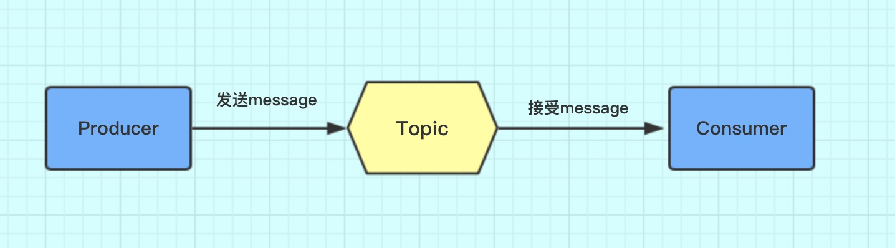
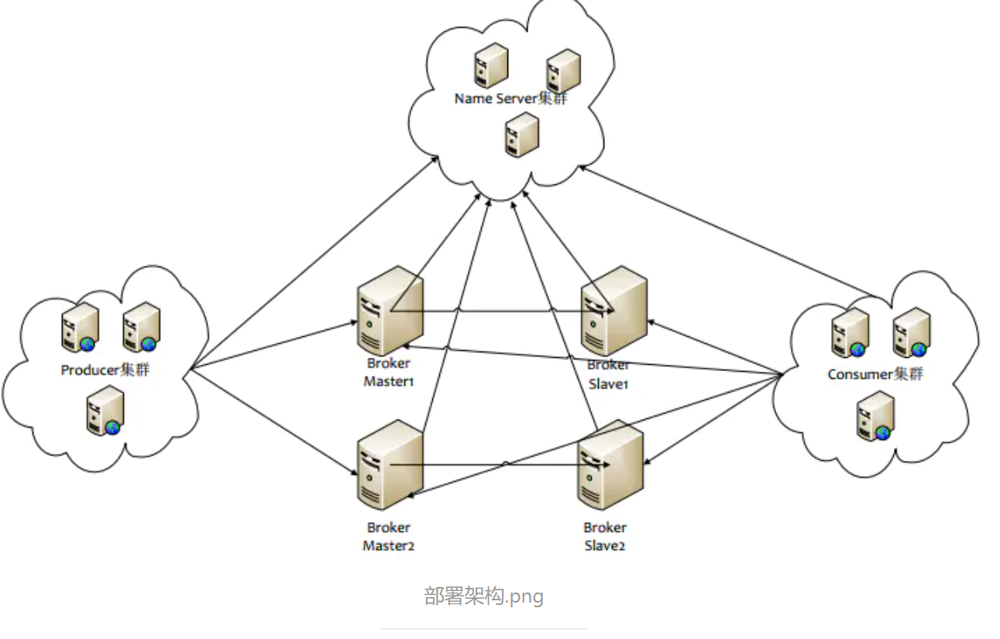
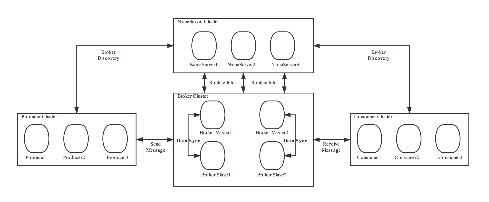
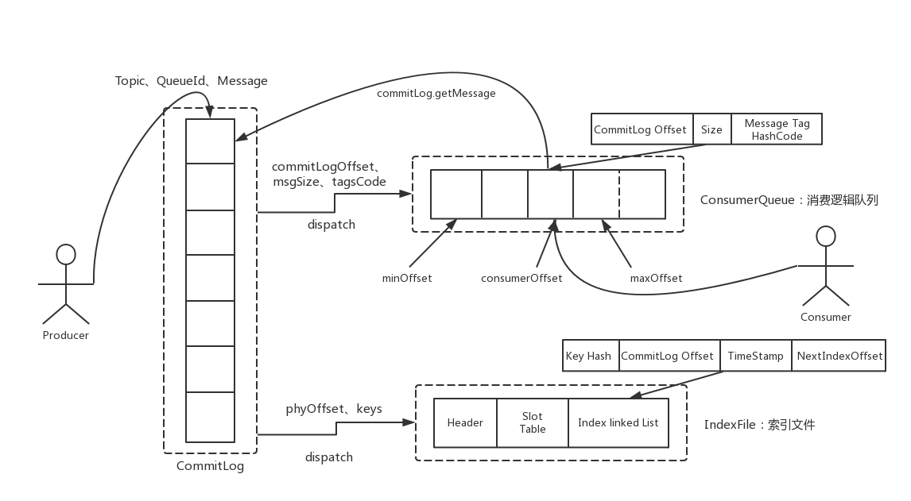
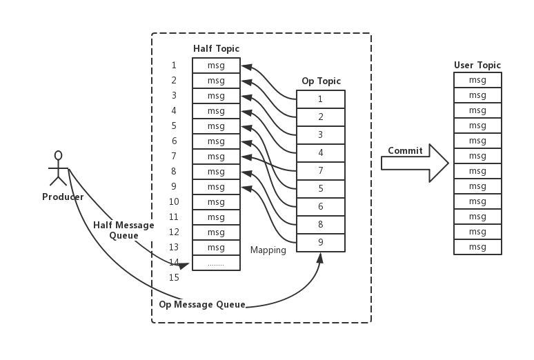
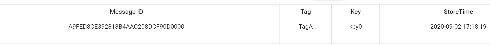
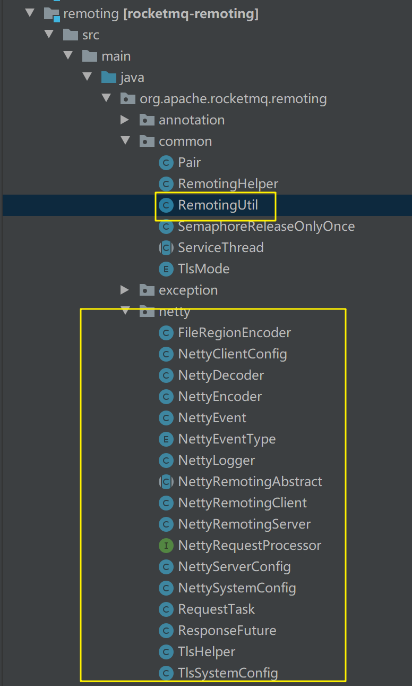

RocketMQ入门与实战
读完RocketMQ系列将学会已下内容：
掌握RokectMQ集群搭建
生产者：解决消息同步/异步，延迟，顺序等问题
消费者： 真正理解Offset存储机制,消费端充实，幂等策略
核心原理，进阶掌握高可用机制，协调服务，刷盘赋值策略
分流/限流，缓存路由，负载均衡，分库分表，抗压点分析
RocketMQ 初探门径
RocketMQ整体认知
RocketMQ是一款分布式，队列模型的消息中间件
4.3.0版本之后开源事务消息的代码
截止2019年03月31日10:07:59最新版本为4.4.0
- 最新版支持分布式事务
- 天然支持集群模式，另外还支持负载均衡，水平扩展能力，支持广播模型
- 亿级别的消息堆积能力
- 采用零拷贝的原理，顺序写盘，随机读
- 丰富的API(同步消息，异步消息，顺序消息，延迟消息，事务消息)
- 代码优秀，底层通讯框架采用Netty
- NameServer代替Zookeeper(自己造轮子，相比zk更轻量)
- 强调集群无单点，可扩展，任意一点高可用，水平可扩展
- 消息失败重试机制，消息可查询 (RabbitMQ消息失败是不支持重试的，rocketmq如果失败了，broker负责重发)
- 开源社区活跃，成熟度高
特性
https://github.com/apache/rocketmq/blob/master/docs/cn/features.md
订阅与发布
消息的发布是指某个生产者向某个topic发送消息；消息的订阅是指某个消费者关注了某个topic中带有某些tag的消息，进而从该topic消费数据。
消息顺序
消息有序指的是一类消息消费时，能按照发送的顺序来消费。例如：一个订单产生了三条消息分别是订单创建、订单付款、订单完成。消费时要按照这个顺序消费才能有意义，但是同时订单之间是可以并行消费的。RocketMQ可以严格的保证消息有序。
顺序消息分为全局顺序消息与分区顺序消息，全局顺序是指某个Topic下的所有消息都要保证顺序；部分顺序消息只要保证每一组消息被顺序消费即可。
- 全局顺序 对于指定的一个 Topic，所有消息按照严格的先入先出（FIFO）的顺序进行发布和消费。 适用场景：性能要求不高，所有的消息严格按照 FIFO 原则进行消息发布和消费的场景
- 分区顺序 对于指定的一个 Topic，所有消息根据 sharding key 进行区块分区。 同一个分区内的消息按照严格的 FIFO 顺序进行发布和消费。 Sharding key 是顺序消息中用来区分不同分区的关键字段，和普通消息的 Key 是完全不同的概念。 适用场景：性能要求高，以 sharding key 作为分区字段，在同一个区块中严格的按照 FIFO 原则进行消息发布和消费的场景。
消息过滤
RocketMQ的消费者可以根据Tag进行消息过滤，也支持自定义属性过滤。消息过滤目前是在Broker端实现的，优点是减少了对于Consumer无用消息的网络传输，缺点是增加了Broker的负担、而且实现相对复杂。
消息可靠性
RocketMQ支持消息的高可靠，影响消息可靠性的几种情况：
- Broker非正常关闭
- Broker异常Crash
- OS Crash
- 机器掉电，但是能立即恢复供电情况
- 机器无法开机（可能是cpu、主板、内存等关键设备损坏）
- 磁盘设备损坏
1)、2)、3)、4) 四种情况都属于硬件资源可立即恢复情况，RocketMQ在这四种情况下能保证消息不丢，或者丢失少量数据（依赖刷盘方式是同步还是异步）。
5)、6)属于单点故障，且无法恢复，一旦发生，在此单点上的消息全部丢失。RocketMQ在这两种情况下，通过异步复制，可保证99%的消息不丢，但是仍然会有极少量的消息可能丢失。通过同步双写技术可以完全避免单点，同步双写势必会影响性能，适合对消息可靠性要求极高的场合，例如与Money相关的应用。注：RocketMQ从3.0版本开始支持同步双写。
至少一次
至少一次(At least Once)指每个消息必须投递一次。Consumer先Pull消息到本地，消费完成后，才向服务器返回ack，如果没有消费一定不会ack消息，所以RocketMQ可以很好的支持此特性。
回溯消费
回溯消费是指Consumer已经消费成功的消息，由于业务上需求需要重新消费，要支持此功能，Broker在向Consumer投递成功消息后，消息仍然需要保留。并且重新消费一般是按照时间维度，例如由于Consumer系统故障，恢复后需要重新消费1小时前的数据，那么Broker要提供一种机制，可以按照时间维度来回退消费进度。RocketMQ支持按照时间回溯消费，时间维度精确到毫秒。
事务消息
RocketMQ事务消息（Transactional Message）是指应用本地事务和发送消息操作可以被定义到全局事务中，要么同时成功，要么同时失败。RocketMQ的事务消息提供类似 X/Open XA 的分布事务功能，通过事务消息能达到分布式事务的最终一致。
定时消息
定时消息（延迟队列）是指消息发送到broker后，不会立即被消费，等待特定时间投递给真正的topic。 broker有配置项messageDelayLevel，默认值为“1s 5s 10s 30s 1m 2m 3m 4m 5m 6m 7m 8m 9m 10m 20m 30m 1h 2h”，18个level。可以配置自定义messageDelayLevel。注意，messageDelayLevel是broker的属性，不属于某个topic。发消息时，设置delayLevel等级即可：msg.setDelayLevel(level)。level有以下三种情况：
- level == 0，消息为非延迟消息
- 1<=level<=maxLevel，消息延迟特定时间，例如level==1，延迟1s
- level > maxLevel，则level== maxLevel，例如level==20，延迟2h
定时消息会暂存在名为SCHEDULE_TOPIC_XXXX的topic中，并根据delayTimeLevel存入特定的queue，queueId = delayTimeLevel – 1，即一个queue只存相同延迟的消息，保证具有相同发送延迟的消息能够顺序消费。broker会调度地消费SCHEDULE_TOPIC_XXXX，将消息写入真实的topic。
需要注意的是，定时消息会在第一次写入和调度写入真实topic时都会计数，因此发送数量、tps都会变高。
消息重试
Consumer消费消息失败后，要提供一种重试机制，令消息再消费一次。Consumer消费消息失败通常可以认为有以下几种情况：
- 由于消息本身的原因，例如反序列化失败，消息数据本身无法处理（例如话费充值，当前消息的手机号被注销，无法充值）等。这种错误通常需要跳过这条消息，再消费其它消息，而这条失败的消息即使立刻重试消费，99%也不成功，所以最好提供一种定时重试机制，即过10秒后再重试。
- 由于依赖的下游应用服务不可用，例如db连接不可用，外系统网络不可达等。遇到这种错误，即使跳过当前失败的消息，消费其他消息同样也会报错。这种情况建议应用sleep 30s，再消费下一条消息，这样可以减轻Broker重试消息的压力。
RocketMQ会为每个消费组都设置一个Topic名称为“%RETRY%+consumerGroup”的重试队列（这里需要注意的是，这个Topic的重试队列是针对消费组，而不是针对每个Topic设置的），用于暂时保存因为各种异常而导致Consumer端无法消费的消息。考虑到异常恢复起来需要一些时间，会为重试队列设置多个重试级别，每个重试级别都有与之对应的重新投递延时，重试次数越多投递延时就越大。RocketMQ对于重试消息的处理是先保存至Topic名称为“SCHEDULE_TOPIC_XXXX”的延迟队列中，后台定时任务按照对应的时间进行Delay后重新保存至“%RETRY%+consumerGroup”的重试队列中。
消息重投
生产者在发送消息时，同步消息失败会重投，异步消息有重试，oneway没有任何保证。消息重投保证消息尽可能发送成功、不丢失，但可能会造成消息重复
消息重复在RocketMQ中是无法避免的问题。
消息重复在RocketMQ中是无法避免的问题。
消息重复在RocketMQ中是无法避免的问题。
消息重复在一般情况下不会发生，当出现消息量大、网络抖动，消息重复就会是大概率事件。另外，生产者主动重发、consumer负载变化也会导致重复消息。如下方法可以设置消息重试策略：
- retryTimesWhenSendFailed:同步发送失败重投次数，默认为2，因此生产者会最多尝试发送retryTimesWhenSendFailed + 1次。不会选择上次失败的broker，尝试向其他broker发送，最大程度保证消息不丢。超过重投次数，抛出异常，由客户端保证消息不丢。当出现RemotingException、MQClientException和部分MQBrokerException时会重投。
- retryTimesWhenSendAsyncFailed:异步发送失败重试次数，异步重试不会选择其他broker，仅在同一个broker上做重试，不保证消息不丢。
- retryAnotherBrokerWhenNotStoreOK:消息刷盘（主或备）超时或slave不可用（返回状态非SEND_OK），是否尝试发送到其他broker，默认false。十分重要消息可以开启。
流量控制
生产者流控，因为broker处理能力达到瓶颈；消费者流控，因为消费能力达到瓶颈。
生产者流控：
- commitLog文件被锁时间超过osPageCacheBusyTimeOutMills时，参数默认为1000ms，返回流控。
- 如果开启transientStorePoolEnable == true，且broker为异步刷盘的主机，且transientStorePool中资源不足，拒绝当前send请求，返回流控。
- broker每隔10ms检查send请求队列头部请求的等待时间，如果超过waitTimeMillsInSendQueue，默认200ms，拒绝当前send请求，返回流控。
- broker通过拒绝send 请求方式实现流量控制。
注意，生产者流控，不会尝试消息重投。
消费者流控：
- 消费者本地缓存消息数超过pullThresholdForQueue时，默认1000。
- 消费者本地缓存消息大小超过pullThresholdSizeForQueue时，默认100MB。
- 消费者本地缓存消息跨度超过consumeConcurrentlyMaxSpan时，默认2000。
消费者流控的结果是降低拉取频率。
死信队列
死信队列用于处理无法被正常消费的消息。当一条消息初次消费失败，消息队列会自动进行消息重试；达到最大重试次数后，若消费依然失败，则表明消费者在正常情况下无法正确地消费该消息，此时，消息队列 不会立刻将消息丢弃，而是将其发送到该消费者对应的特殊队列中。
RocketMQ将这种正常情况下无法被消费的消息称为死信消息（Dead-Letter Message），将存储死信消息的特殊队列称为死信队列（Dead-Letter Queue）。在RocketMQ中，可以通过使用console控制台对死信队列中的消息进行重发来使得消费者实例再次进行消费。
RocketMQ概念模型
https://github.com/apache/rocketmq/blob/master/docs/cn/concept.md
Producer
消息生产者，负责生产消息,一般由业务系统负责产生消息。 位于用户的进程内，Producer通过NameServer获取所有Broker的路由信息，根据负载均衡策略选择将消息发到哪个Broker，然后调用Broker接口提交消息。
Producer Group
生产者组，简单来说就是多个发送同一类消息的生产者称之为一个生产者组。
生产者可以有多个，启动时候可以定义多个节点同一个组。在RocketMQ中生产者组合消费者组是必须要定义的，并且一个环境只能起一个相同名称的group
Consumer
消息消费者，负责消费消息，一般是后台系统负责异步消费.
位于用户进程内。Consumer通过NameServer获取所有broker的路由信息后，向Broker发送Pull请求来获取消息数据。Consumer可以以两种模式启动，广播（Broadcast）和集群（Cluster），广播模式下，一条消息会发送给所有Consumer，集群模式下消息只会发送给一个Consumer。
- Push Consumer(推送的Consumer):Consumer的一种，需要向Consumer对象注册监听，监听mq向我们推消息
- Pull Consumer(拉取消息):Consumer的一种，需要主动请求Broker拉取消息
Consumer Group
消费者组，和生产者类似，消费同一类消息的多个 Consumer 实例组成一个消费者组。
这个比较好理解，比如三个消费者组成一个组，那么可以设置成发过来的消息都接受到，或者负载均衡各自接受消息(互相不重复) (集群模式或广播模式)
Topic
Topic用于将消息按主题做划分，Producer将消息发往指定的Topic，Consumer订阅该Topic就可以收到这条消息。Topic跟发送方和消费方都没有强关联关系，发送方可以同时往多个Topic投放消息，消费方也可以订阅多个Topic的消息。在RocketMQ中
Topic是一个上逻辑概念。消息存储不会按Topic分开， 一个Topic分布在多个Broker上。
Topic是一个上逻辑概念。消息存储不会按Topic分开， 一个Topic分布在多个Broker上。
Topic是一个上逻辑概念。消息存储不会按Topic分开， 一个Topic分布在多个Broker上。
Message
代表一条消息，使用MessageId唯一识别，用户在发送时可以设置messageKey，便于之后查询和跟踪。一个 Message 必须指定 Topic，相当于寄信的地址。Message 还有一个可选的 Tag 设置，以便消费端可以基于 Tag 进行过滤消息。也可以添加额外的键值对，例如你需要一个业务 key 来查找 Broker 上的消息，方便在开发过程中诊断问题。
Tag
标签可以被认为是对 Topic 进一步细化。一般在相同业务模块中通过引入标签来标记不同用途的消息。
Tags是Topic下的次级消息类型（注：Tags也支持TagA || TagB这样的表达式），可以在同一个Topic下基于Tags进行消息过滤。Tags的过滤需要经过两次比对，首先会在Broker端通过Tag hashcode进行一次比对过滤，匹配成功传到consumer端后再对具体Tags进行比对，以防止Tag hashcode重复的情况。
Broker
Broker:MQ消息服务(中转角色，用于消息存储与生产消费转发)
Broker是RocketMQ的核心模块，负责接收并存储消息，同时提供Push/Pull接口来将消息发送给Consumer。Consumer可选择从Master或者Slave读取数据。多个主/从组成Broker集群，集群内的Master节点之间不做数据交互。Broker同时提供消息查询的功能，可以通过MessageID和MessageKey来查询消息。Borker会将自己的Topic配置信息实时同步到NameServer。
集群消费
集群消费模式下,相同Consumer Group的每个Consumer实例平均分摊消息。
广播消费
广播消费模式下，相同Consumer Group的每个Consumer实例都接收全量的消息。
普通顺序消费
普通顺序消费模式下，消费者通过同一个消费队列收到的消息是有顺序的，不同消息队列收到的消息则可能是无顺序的。
严格顺序消费
严格顺序消息模式下，消费者收到的所有消息均是有顺序的。
Broker与NameServer关系
1）连接 单个Broker和所有Name Server保持长连接。(NameServer是一个几乎无状态节点，可集群部署，节点之间无任何信息同步)
2）心跳
心跳间隔：每隔30秒向所有NameServer发送心跳，心跳包含了自身的Topic配置信息。
心跳超时：NameServer每隔10秒，扫描所有还存活的Broker连接，若某个连接2分钟内没有发送心跳数据，则断开连接。
3）断开：当Broker挂掉；NameServer会根据心跳超时主动关闭连接,一旦连接断开，会更新Topic与队列的对应关系，但不会通知生产者和消费者。
负载均衡
一个Topic分布在多个Broker上，一个Broker可以配置多个Topic，它们是多对多的关系。
如果某个Topic消息量很大，应该给它多配置几个Queue，并且尽量多分布在不同Broker上，减轻某个Broker的压力。
可用性
由于消息分布在各个Broker上，一旦某个Broker宕机，则该Broker上的消息读写都会受到影响。
所以RocketMQ提供了Master/Slave的结构，Salve定时从Master同步数据，如果Master宕机，则Slave提供消费服务，但是不能写入消息，此过程对应用透明，由RocketMQ内部解决。
有两个关键点：思考1一旦某个broker master宕机，生产者和消费者多久才能发现？
受限于Rocketmq的网络连接机制，默认情况下最多需要30秒，因为消费者每隔30秒从nameserver获取所有topic的最新队列情况，这意味着某个broker如果宕机，客户端最多要30秒才能感知。
思考2 master恢复恢复后，消息能否恢复。
消费者得到Master宕机通知后，转向Slave消费，但是Slave不能保证Master的消息100%都同步过来了，因此会有少量的消息丢失。但是消息最终不会丢的，一旦Master恢复，未同步过去的消息会被消费掉。
Queue
Topic和Queue是1对多的关系，一个Topic下可以包含多个Queue，主要用于负载均衡。发送消息时，用户只指定Topic ,，Producer会根据Topic的路由信息选择具体发到哪个Queue上。Consumer订阅消息时，会根据负载均衡策略决定订阅哪些Queue的消息。
也可以指定queue发送
SendResult sendResult=producer.send(message, new MessageQueueSelector() {
@Override
public MessageQueue select(List<MessageQueue> msgQueueList, Message message, Object arg) {
Integer queueNumber = (int) arg;
return msgQueueList.get(queueNumber);
}
},1);//这个1会回调给 public MessageQueue select(List<MessageQueue> list, Message message, Object arg) 的 arg,也就是指定发送到第1个队列
默认一个topic 有4个队列，下标：0-3 ；
这里要重写该构造方法， 1 表示的是指投递第一个队列queue
查看控制台日志可以看到该消息只投递到了 queueId= 1的队列
ps:投递的Id设置必须小于总的队列数
offset
RocketMQ在存储消息时会为每个Topic下的每个Queue生成一个消息的索引文件，每个Queue都对应一个Offset记录当前Queue中消息条数。
NameServer
NameServer的作用是注册中心，类似于Zookeeper，但又有区别于它的地方。每个NameServer节点互相之间是独立的，没有任何信息交互，也就不存在任何的选主或者主从切换之类的问题，因此NameServer与Zookeeper相比更轻量级。单个NameServer节点中存储了活跃的Broker列表（包括master和slave），这里活跃的定义是与NameServer保持有心跳。
它管理两部分数据：集群的Topic-Queue的路由配置；Broker的实时配置信息。其它模块通过Nameserv提供的接口获取最新的Topic配置和路由信息。
Producer/Consumer：通过查询接口获取Topic对应的Broker的地址信息Broker： 注册配置信息到NameServer， 实时更新Topic信息到NameServer
Broker集群
Broker是具体提供业务的服务器，单个Broker节点与所有的NameServer节点保持长连接及心跳，并会定时将Topic信息注册到NameServer，顺带一提底层的通信和连接都是基于Netty实现的。
Broker中分master和slave两种角色，每个master可以对应多个slave，但一个slave只能对应一个master，master和slave通过指定相同的Brokername，不同的BrokerId （master为0）成为一个组。master和slave之间的同步方式分为同步双写和异步复制，异步复制方式master和slave之间虽然会存在少量的延迟，但性能较同步双写方式要高出10%左右。
另外，Broker中还存在一些非常重要的名词需要说明：
Topic和Queue
RocketMQ的Topic/Queue和JMS中的Topic/Queue概念有一定的差异，JMS中所有消费者都会消费一个Topic消息的副本，而Queue中消息只会被一个消费者消费；但到了RocketMQ中Topic只代表普通的消息队列，而Queue是组成Topic的更小单元，集群消费模式下一个消费者只消费该Topic中部分Queue中的消息，当一个消费者开启广播模式时则会消费该Topic下所有Queue中的消息。Topic和Queue的具体关系可以参考下图

流程图:

消息先发到Topic，然后消费者去Topic拿消息。Topic只是个逻辑上的概念，那它到底是怎么存储消息数据的呢，这里就要引入Broker 。
Topic的存储
Topic是一个逻辑上的概念，实际上Message是在每个Broker上以Queue的形式记录。

从上面的图片可以总结下几条结论。
- 消费者发送的Message会在Broker中的Queue队列中记录。
- 一个Topic的数据可能会存在多个Broker中。
- 一个Broker存在多个Queue。
- 单个的Queue也可能存储多个Topic的消息。
也就是说每个Topic在Broker上会划分成几个逻辑队列，每个逻辑队列保存一部分消息数据，但是保存的消息数据实际上不是真正的消息数据，而是指向commit log的消息索引。
Queue不是真正存储Message的地方，真正存储Message的地方是在CommitLog。
如下图所示
左边的是CommitLog。这个是真正存储消息的地方。RocketMQ所有生产者的消息都是往这一个地方存的。
右边是ConsumeQueue。这是一个逻辑队列。和上文中Topic下的Queue是一一对应的。消费者是直接和ConsumeQueue打交道。ConsumeQueue记录了消费位点，这个消费位点关联了commitlog的位置。所以即使ConsumeQueue出问题，只要commitlog还在，消息就没丢，可以恢复出来。还可以通过修改消费位点来重放或跳过一些消息。
部署模型

针对这张图做个说明
1、Producer和consumer集群部署，是你开发的项目进行集群部署。
2、Broker 集群部署是为了高可用，因为Broker是真正存储Message的地方，集群部署是为了避免一台挂掉，导致整个项目KO.
那Name SerVer是做什么用呢，它和Product、Consumer、Broker之前存在怎样的关系呢？
先简单概括Name Server的特点：
- NameServer是一个几乎无状态节点，可集群部署，节点之间无任何信息同步。
- 每个Broker与NameServer集群中的所有节点建立长连接，定时注册Topic信息到所有Name Server。
- Producer与NameServer集群中的其中一个节点（随机选择）建立长连接，定期从Name Server取Topic路由信息。
- Consumer与Name Server集群中的其中一个节点（随机选择）建立长连接，定期从Name Server取Topic路由信息。
这里面最核心的是每个Broker与NameServer集群中的所有节点建立长连接这样做好处多多。
1、这样可以使NameServer之间可以没有任何关联，因为它们绑定的Broker是一致的。
2、作为Producer或者Consumer可以绑定任何一个NameServer 因为它们都是一样的。
消费者
Consumer与Name Server关系
1）连接 : 单个Consumer和一台NameServer保持长连接，如果该NameServer挂掉，消费者会自动连接下一个NameServer，直到有可用连接为止，并能自动重连。
2）心跳: 与NameServer没有心跳（broker与nameserver之间有心跳）
3）轮询时间 : 默认情况下，消费者每隔30秒从NameServer获取所有Topic的最新队列情况，这意味着某个Broker如果宕机，客户端最多要30秒才能感知。
Consumer与Broker关系
1）连接 :单个消费者和该消费者关联的所有broker保持长连接。
负载均衡
集群消费模式下，一个消费者集群多台机器共同消费一个Topic的多个队列，一个队列只会被一个消费者消费。如果某个消费者挂掉，分组内其它消费者会接替挂掉的消费者继续消费。
生产者
Producer与Name Server关系
1）连接 单个Producer和一台NameServer保持长连接，如果该NameServer挂掉，生产者会自动连接下一个NameServer，直到有可用连接为止，并能自动重连。
2）轮询时间 默认情况下，生产者每隔30秒从NameServer获取所有Topic的最新队列情况，这意味着某个Broker如果宕机，生产者最多要30秒才能感知，在此期间，
发往该broker的消息发送失败。
3）心跳 与nameserver没有心跳
与broker关系
连接 单个生产者和该生产者关联的所有broker保持长连接。
架构设计
https://github.com/apache/rocketmq/blob/master/docs/cn/architecture.md

RocketMQ架构上主要分为四部分，如上图所示:
- Producer：消息发布的角色，支持分布式集群方式部署。Producer通过MQ的负载均衡模块选择相应的Broker集群队列进行消息投递，投递的过程支持快速失败并且低延迟。
- Consumer：消息消费的角色，支持分布式集群方式部署。支持以push推，pull拉两种模式对消息进行消费。同时也支持集群方式和广播方式的消费，它提供实时消息订阅机制，可以满足大多数用户的需求。
- NameServer：NameServer是一个非常简单的Topic路由注册中心，其角色类似Dubbo中的zookeeper，支持Broker的动态注册与发现。主要包括两个功能：Broker管理，NameServer接受Broker集群的注册信息并且保存下来作为路由信息的基本数据。然后提供心跳检测机制，检查Broker是否还存活；路由信息管理，每个NameServer将保存关于Broker集群的整个路由信息和用于客户端查询的队列信息。然后Producer和Conumser通过NameServer就可以知道整个Broker集群的路由信息，从而进行消息的投递和消费。NameServer通常也是集群的方式部署，各实例间相互不进行信息通讯。Broker是向每一台NameServer注册自己的路由信息，所以每一个NameServer实例上面都保存一份完整的路由信息。当某个NameServer因某种原因下线了，Broker仍然可以向其它NameServer同步其路由信息，Producer,Consumer仍然可以动态感知Broker的路由的信息。
- BrokerServer：Broker主要负责消息的存储、投递和查询以及服务高可用保证，为了实现这些功能，Broker包含了以下几个重要子模块。
Remoting Module：整个Broker的实体，负责处理来自clients端的请求。
Client Manager：负责管理客户端(Producer/Consumer)和维护Consumer的Topic订阅信息
Store Service：提供方便简单的API接口处理消息存储到物理硬盘和查询功能。
HA Service：高可用服务，提供Master Broker 和 Slave Broker之间的数据同步功能。
Index Service：根据特定的Message key对投递到Broker的消息进行索引服务，以提供消息的快速查询。

部署架构

- NameServer是一个几乎无状态节点，可集群部署，节点之间无任何信息同步。
- Broker部署相对复杂，Broker分为Master与Slave，一个Master可以对应多个Slave，但是一个Slave只能对应一个Master，Master与Slave 的对应关系通过指定相同的BrokerName，不同的BrokerId 来定义，BrokerId为0表示Master，非0表示Slave。Master也可以部署多个。每个Broker与NameServer集群中的所有节点建立长连接，定时注册Topic信息到所有NameServer。 注意：当前RocketMQ版本在部署架构上支持一Master多Slave，但只有BrokerId=1的从服务器才会参与消息的读负载。
- Producer与NameServer集群中的其中一个节点（随机选择）建立长连接，定期从NameServer获取Topic路由信息，并向提供Topic 服务的Master建立长连接，且定时向Master发送心跳。Producer完全无状态，可集群部署。
- Consumer与NameServer集群中的其中一个节点（随机选择）建立长连接，定期从NameServer获取Topic路由信息，并向提供Topic服务的Master、Slave建立长连接，且定时向Master、Slave发送心跳。Consumer既可以从Master订阅消息，也可以从Slave订阅消息，消费者在向Master拉取消息时，Master服务器会根据拉取偏移量与最大偏移量的距离（判断是否读老消息，产生读I/O），以及从服务器是否可读等因素建议下一次是从Master还是Slave拉取。
结合部署架构图，描述集群工作流程：
- 启动NameServer，NameServer起来后监听端口，等待Broker、Producer、Consumer连上来，相当于一个路由控制中心。
- Broker启动，跟所有的NameServer保持长连接，定时发送心跳包。心跳包中包含当前Broker信息(IP+端口等)以及存储所有Topic信息。注册成功后，NameServer集群中就有Topic跟Broker的映射关系。
- 收发消息前，先创建Topic，创建Topic时需要指定该Topic要存储在哪些Broker上，也可以在发送消息时自动创建Topic。
- Producer发送消息，启动时先跟NameServer集群中的其中一台建立长连接，并从NameServer中获取当前发送的Topic存在哪些Broker上，轮询从队列列表中选择一个队列，然后与队列所在的Broker建立长连接从而向Broker发消息。
- Consumer跟Producer类似，跟其中一台NameServer建立长连接，获取当前订阅Topic存在哪些Broker上，然后直接跟Broker建立连接通道，开始消费消息。
设计
https://github.com/apache/rocketmq/blob/master/docs/cn/design.md
消息存储

消息存储是RocketMQ中最为复杂和最为重要的一部分，本节将分别从RocketMQ的消息存储整体架构、PageCache与Mmap内存映射以及RocketMQ中两种不同的刷盘方式三方面来分别展开叙述。
消息存储整体架构
消息存储架构图中主要有下面三个跟消息存储相关的文件构成。
(1) CommitLog：消息主体以及元数据的存储主体，存储Producer端写入的消息主体内容,消息内容不是定长的。单个文件大小默认1G ，文件名长度为20位，左边补零，剩余为起始偏移量，比如00000000000000000000代表了第一个文件，起始偏移量为0，文件大小为1G=1073741824；当第一个文件写满了，第二个文件为00000000001073741824，起始偏移量为1073741824，以此类推。消息主要是顺序写入日志文件，当文件满了，写入下一个文件；
(2) ConsumeQueue：消息消费队列，引入的目的主要是提高消息消费的性能，由于RocketMQ是基于主题topic的订阅模式，消息消费是针对主题进行的，如果要遍历commitlog文件中根据topic检索消息是非常低效的。Consumer即可根据ConsumeQueue来查找待消费的消息。其中，ConsumeQueue（逻辑消费队列）作为消费消息的索引，保存了指定Topic下的队列消息在CommitLog中的起始物理偏移量offset，消息大小size和消息Tag的HashCode值。consumequeue文件可以看成是基于topic的commitlog索引文件，故consumequeue文件夹的组织方式如下：topic/queue/file三层组织结构，具体存储路径为：$HOME/store/consumequeue/{topic}/{queueId}/{fileName}。同样consumequeue文件采取定长设计，每一个条目共20个字节，分别为8字节的commitlog物理偏移量、4字节的消息长度、8字节tag hashcode，单个文件由30W个条目组成，可以像数组一样随机访问每一个条目，每个ConsumeQueue文件大小约5.72M；
(3) IndexFile：IndexFile（索引文件）提供了一种可以通过key或时间区间来查询消息的方法。Index文件的存储位置是：$HOME \store\index${fileName}，文件名fileName是以创建时的时间戳命名的，固定的单个IndexFile文件大小约为400M，一个IndexFile可以保存 2000W个索引，IndexFile的底层存储设计为在文件系统中实现HashMap结构，故rocketmq的索引文件其底层实现为hash索引。
在上面的RocketMQ的消息存储整体架构图中可以看出，RocketMQ采用的是混合型的存储结构，即为Broker单个实例下所有的队列共用一个日志数据文件（即为CommitLog）来存储。RocketMQ的混合型存储结构(多个Topic的消息实体内容都存储于一个CommitLog中)针对Producer和Consumer分别采用了数据和索引部分相分离的存储结构，Producer发送消息至Broker端，然后Broker端使用同步或者异步的方式对消息刷盘持久化，保存至CommitLog中。只要消息被刷盘持久化至磁盘文件CommitLog中，那么Producer发送的消息就不会丢失。正因为如此，Consumer也就肯定有机会去消费这条消息。当无法拉取到消息后，可以等下一次消息拉取，同时服务端也支持长轮询模式，如果一个消息拉取请求未拉取到消息，Broker允许等待30s的时间，只要这段时间内有新消息到达，将直接返回给消费端。这里，RocketMQ的具体做法是，使用Broker端的后台服务线程—ReputMessageService不停地分发请求并异步构建ConsumeQueue（逻辑消费队列）和IndexFile（索引文件）数据。
页缓存与内存映射
页缓存（PageCache)是OS对文件的缓存，用于加速对文件的读写。一般来说，程序对文件进行顺序读写的速度几乎接近于内存的读写速度，主要原因就是由于OS使用PageCache机制对读写访问操作进行了性能优化，将一部分的内存用作PageCache。对于数据的写入，OS会先写入至Cache内，随后通过异步的方式由pdflush内核线程将Cache内的数据刷盘至物理磁盘上。对于数据的读取，如果一次读取文件时出现未命中PageCache的情况，OS从物理磁盘上访问读取文件的同时，会顺序对其他相邻块的数据文件进行预读取。
在RocketMQ中，ConsumeQueue逻辑消费队列存储的数据较少，并且是顺序读取，在page cache机制的预读取作用下，Consume Queue文件的读性能几乎接近读内存，即使在有消息堆积情况下也不会影响性能。而对于CommitLog消息存储的日志数据文件来说，读取消息内容时候会产生较多的随机访问读取，严重影响性能。如果选择合适的系统IO调度算法，比如设置调度算法为“Deadline”（此时块存储采用SSD的话），随机读的性能也会有所提升。
另外，RocketMQ主要通过MappedByteBuffer对文件进行读写操作。其中，利用了NIO中的FileChannel模型将磁盘上的物理文件直接映射到用户态的内存地址中（这种Mmap的方式减少了传统IO将磁盘文件数据在操作系统内核地址空间的缓冲区和用户应用程序地址空间的缓冲区之间来回进行拷贝的性能开销），将对文件的操作转化为直接对内存地址进行操作，从而极大地提高了文件的读写效率（正因为需要使用内存映射机制，故RocketMQ的文件存储都使用定长结构来存储，方便一次将整个文件映射至内存）。
消息刷盘

(1) 同步刷盘：如上图所示，只有在消息真正持久化至磁盘后RocketMQ的Broker端才会真正返回给Producer端一个成功的ACK响应。同步刷盘对MQ消息可靠性来说是一种不错的保障，但是性能上会有较大影响，一般适用于金融业务应用该模式较多。
(2) 异步刷盘：能够充分利用OS的PageCache的优势，只要消息写入PageCache即可将成功的ACK返回给Producer端。消息刷盘采用后台异步线程提交的方式进行，降低了读写延迟，提高了MQ的性能和吞吐量。
通信机制
RocketMQ消息队列集群主要包括NameServer、Broker(Master/Slave)、Producer、Consumer4个角色，基本通讯流程如下：
(1) Broker启动后需要完成一次将自己注册至NameServer的操作；随后每隔30s时间定时向NameServer上报Topic路由信息。
(2) 消息生产者Producer作为客户端发送消息时候，需要根据消息的Topic从本地缓存的TopicPublishInfoTable获取路由信息。如果没有则更新路由信息会从NameServer上重新拉取，同时Producer会默认每隔30s向NameServer拉取一次路由信息。
(3) 消息生产者Producer根据2）中获取的路由信息选择一个队列（MessageQueue）进行消息发送；Broker作为消息的接收者接收消息并落盘存储。
(4) 消息消费者Consumer根据2）中获取的路由信息，并再完成客户端的负载均衡后，选择其中的某一个或者某几个消息队列来拉取消息并进行消费。
从上面1）~3）中可以看出在消息生产者, Broker和NameServer之间都会发生通信（这里只说了MQ的部分通信），因此如何设计一个良好的网络通信模块在MQ中至关重要，它将决定RocketMQ集群整体的消息传输能力与最终的性能。
rocketmq-remoting 模块是 RocketMQ消息队列中负责网络通信的模块，它几乎被其他所有需要网络通信的模块（诸如rocketmq-client、rocketmq-broker、rocketmq-namesrv）所依赖和引用。为了实现客户端与服务器之间高效的数据请求与接收，RocketMQ消息队列自定义了通信协议并在Netty的基础之上扩展了通信模块。
通信类结构
下面会讲到
协议设计与编解码
在Client和Server之间完成一次消息发送时，需要对发送的消息进行一个协议约定，因此就有必要自定义RocketMQ的消息协议。同时，为了高效地在网络中传输消息和对收到的消息读取，就需要对消息进行编解码。在RocketMQ中，RemotingCommand这个类在消息传输过程中对所有数据内容的封装，不但包含了所有的数据结构，还包含了编码解码操作。
| Header字段 | 类型 | Request说明 | Response说明 |
|---|---|---|---|
| code | int | 请求操作码，应答方根据不同的请求码进行不同的业务处理 | 应答响应码。0表示成功，非0则表示各种错误 |
| language | LanguageCode | 请求方实现的语言 | 应答方实现的语言 |
| version | int | 请求方程序的版本 | 应答方程序的版本 |
| opaque | int | 相当于requestId，在同一个连接上的不同请求标识码，与响应消息中的相对应 | 应答不做修改直接返回 |
| flag | int | 区分是普通RPC还是onewayRPC得标志 | 区分是普通RPC还是onewayRPC得标志 |
| remark | String | 传输自定义文本信息 | 传输自定义文本信息 |
| extFields | HashMap |
请求自定义扩展信息 | 响应自定义扩展信息 |

可见传输内容主要可以分为以下4部分：
(1) 消息长度：总长度，四个字节存储，占用一个int类型；
(2) 序列化类型&消息头长度：同样占用一个int类型，第一个字节表示序列化类型，后面三个字节表示消息头长度；
(3) 消息头数据：经过序列化后的消息头数据；
(4) 消息主体数据：消息主体的二进制字节数据内容；
消息的通信方式和流程
在RocketMQ消息队列中支持通信的方式主要有同步(sync)、异步(async)、单向(oneway) 三种。其中“单向”通信模式相对简单，一般用在发送心跳包场景下，无需关注其Response。这里，主要介绍RocketMQ的异步通信流程。

Reactor多线程设计
RocketMQ的RPC通信采用Netty组件作为底层通信库，同样也遵循了Reactor多线程模型，同时又在这之上做了一些扩展和优化。

上面的框图中可以大致了解RocketMQ中NettyRemotingServer的Reactor 多线程模型。一个 Reactor 主线程（eventLoopGroupBoss，即为上面的1）负责监听 TCP网络连接请求，建立好连接，创建SocketChannel，并注册到selector上。RocketMQ的源码中会自动根据OS的类型选择NIO和Epoll，也可以通过参数配置）,然后监听真正的网络数据。拿到网络数据后，再丢给Worker线程池（eventLoopGroupSelector，即为上面的“N”，源码中默认设置为3），在真正执行业务逻辑之前需要进行SSL验证、编解码、空闲检查、网络连接管理，这些工作交给defaultEventExecutorGroup（即为上面的“M1”，源码中默认设置为8）去做。而处理业务操作放在业务线程池中执行，根据 RomotingCommand 的业务请求码code去processorTable这个本地缓存变量中找到对应的 processor，然后封装成task任务后，提交给对应的业务processor处理线程池来执行（sendMessageExecutor，以发送消息为例，即为上面的 “M2”）。从入口到业务逻辑的几个步骤中线程池一直再增加，这跟每一步逻辑复杂性相关，越复杂，需要的并发通道越宽。
| 线程数 | 线程名 | 线程具体说明 |
|---|---|---|
| 1 | NettyBoss_%d | Reactor 主线程 |
| N | NettyServerEPOLLSelector%d%d | Reactor 线程池 |
| M1 | NettyServerCodecThread_%d | Worker线程池 |
| M2 | RemotingExecutorThread_%d | 业务processor处理线程池 |
消息过滤
RocketMQ分布式消息队列的消息过滤方式有别于其它MQ中间件，是在Consumer端订阅消息时再做消息过滤的。RocketMQ这么做是在于其Producer端写入消息和Consumer端订阅消息采用分离存储的机制来实现的，Consumer端订阅消息是需要通过ConsumeQueue这个消息消费的逻辑队列拿到一个索引，然后再从CommitLog里面读取真正的消息实体内容，所以说到底也是还绕不开其存储结构。其ConsumeQueue的存储结构如下，可以看到其中有8个字节存储的Message Tag的哈希值，基于Tag的消息过滤正式基于这个字段值的。

主要支持如下2种的过滤方式 (1) Tag过滤方式：Consumer端在订阅消息时除了指定Topic还可以指定TAG，如果一个消息有多个TAG，可以用||分隔。其中，Consumer端会将这个订阅请求构建成一个 SubscriptionData，发送一个Pull消息的请求给Broker端。Broker端从RocketMQ的文件存储层—Store读取数据之前，会用这些数据先构建一个MessageFilter，然后传给Store。Store从 ConsumeQueue读取到一条记录后，会用它记录的消息tag hash值去做过滤，由于在服务端只是根据hashcode进行判断，无法精确对tag原始字符串进行过滤，故在消息消费端拉取到消息后，还需要对消息的原始tag字符串进行比对，如果不同，则丢弃该消息，不进行消息消费。
(2) SQL92的过滤方式：这种方式的大致做法和上面的Tag过滤方式一样，只是在Store层的具体过滤过程不太一样，真正的 SQL expression 的构建和执行由rocketmq-filter模块负责的。每次过滤都去执行SQL表达式会影响效率，所以RocketMQ使用了BloomFilter避免了每次都去执行。SQL92的表达式上下文为消息的属性。
负载均衡
RocketMQ中的负载均衡都在Client端完成，具体来说的话，主要可以分为Producer端发送消息时候的负载均衡和Consumer端订阅消息的负载均衡。
Producer的负载均衡
Producer端在发送消息的时候，会先根据Topic找到指定的TopicPublishInfo，在获取了TopicPublishInfo路由信息后，RocketMQ的客户端在默认方式下selectOneMessageQueue()方法会从TopicPublishInfo中的messageQueueList中选择一个队列（MessageQueue）进行发送消息。具体的容错策略均在MQFaultStrategy这个类中定义。这里有一个sendLatencyFaultEnable开关变量，如果开启，在随机递增取模的基础上，再过滤掉not available的Broker代理。所谓的”latencyFaultTolerance”，是指对之前失败的，按一定的时间做退避。例如，如果上次请求的latency超过550Lms，就退避3000Lms；超过1000L，就退避60000L；如果关闭，采用随机递增取模的方式选择一个队列（MessageQueue）来发送消息，latencyFaultTolerance机制是实现消息发送高可用的核心关键所在。
Consumer的负载均衡
在RocketMQ中，Consumer端的两种消费模式（Push/Pull）都是基于拉模式来获取消息的，而在Push模式只是对pull模式的一种封装，其本质实现为消息拉取线程在从服务器拉取到一批消息后，然后提交到消息消费线程池后，又“马不停蹄”的继续向服务器再次尝试拉取消息。如果未拉取到消息，则延迟一下又继续拉取。在两种基于拉模式的消费方式（Push/Pull）中，均需要Consumer端在知道从Broker端的哪一个消息队列—队列中去获取消息。因此，有必要在Consumer端来做负载均衡，即Broker端中多个MessageQueue分配给同一个ConsumerGroup中的哪些Consumer消费。
1、Consumer端的心跳包发送
在Consumer启动后，它就会通过定时任务不断地向RocketMQ集群中的所有Broker实例发送心跳包（其中包含了，消息消费分组名称、订阅关系集合、消息通信模式和客户端id的值等信息）。Broker端在收到Consumer的心跳消息后，会将它维护在ConsumerManager的本地缓存变量—consumerTable，同时并将封装后的客户端网络通道信息保存在本地缓存变量—channelInfoTable中，为之后做Consumer端的负载均衡提供可以依据的元数据信息。
2、Consumer端实现负载均衡的核心类—RebalanceImpl
在Consumer实例的启动流程中的启动MQClientInstance实例部分，会完成负载均衡服务线程—RebalanceService的启动（每隔20s执行一次）。通过查看源码可以发现，RebalanceService线程的run()方法最终调用的是RebalanceImpl类的rebalanceByTopic()方法，该方法是实现Consumer端负载均衡的核心。这里，rebalanceByTopic()方法会根据消费者通信类型为“广播模式”还是“集群模式”做不同的逻辑处理。这里主要来看下集群模式下的主要处理流程：
(1) 从rebalanceImpl实例的本地缓存变量—topicSubscribeInfoTable中，获取该Topic主题下的消息消费队列集合（mqSet）；
(2) 根据topic和consumerGroup为参数调用mQClientFactory.findConsumerIdList()方法向Broker端发送获取该消费组下消费者Id列表的RPC通信请求（Broker端基于前面Consumer端上报的心跳包数据而构建的consumerTable做出响应返回，业务请求码：GET_CONSUMER_LIST_BY_GROUP）；
(3) 先对Topic下的消息消费队列、消费者Id排序，然后用消息队列分配策略算法（默认为：消息队列的平均分配算法），计算出待拉取的消息队列。这里的平均分配算法，类似于分页的算法，将所有MessageQueue排好序类似于记录，将所有消费端Consumer排好序类似页数，并求出每一页需要包含的平均size和每个页面记录的范围range，最后遍历整个range而计算出当前Consumer端应该分配到的记录（这里即为：MessageQueue）。

(4) 然后，调用updateProcessQueueTableInRebalance()方法，具体的做法是，先将分配到的消息队列集合（mqSet）与processQueueTable做一个过滤比对。

- 上图中processQueueTable标注的红色部分，表示与分配到的消息队列集合mqSet互不包含。将这些队列设置Dropped属性为true，然后查看这些队列是否可以移除出processQueueTable缓存变量，这里具体执行removeUnnecessaryMessageQueue()方法，即每隔1s 查看是否可以获取当前消费处理队列的锁，拿到的话返回true。如果等待1s后，仍然拿不到当前消费处理队列的锁则返回false。如果返回true，则从processQueueTable缓存变量中移除对应的Entry；
- 上图中processQueueTable的绿色部分，表示与分配到的消息队列集合mqSet的交集。判断该ProcessQueue是否已经过期了，在Pull模式的不用管，如果是Push模式的，设置Dropped属性为true，并且调用removeUnnecessaryMessageQueue()方法，像上面一样尝试移除Entry；
最后，为过滤后的消息队列集合（mqSet）中的每个MessageQueue创建一个ProcessQueue对象并存入RebalanceImpl的processQueueTable队列中（其中调用RebalanceImpl实例的computePullFromWhere(MessageQueue mq)方法获取该MessageQueue对象的下一个进度消费值offset，随后填充至接下来要创建的pullRequest对象属性中），并创建拉取请求对象—pullRequest添加到拉取列表—pullRequestList中，最后执行dispatchPullRequest()方法，将Pull消息的请求对象PullRequest依次放入PullMessageService服务线程的阻塞队列pullRequestQueue中，待该服务线程取出后向Broker端发起Pull消息的请求。其中，可以重点对比下，RebalancePushImpl和RebalancePullImpl两个实现类的dispatchPullRequest()方法不同，RebalancePullImpl类里面的该方法为空，这样子也就回答了上一篇中最后的那道思考题了。
消息消费队列在同一消费组不同消费者之间的负载均衡，其核心设计理念是在一个消息消费队列在同一时间只允许被同一消费组内的一个消费者消费，一个消息消费者能同时消费多个消息队列。
事务消息
Apache RocketMQ在4.3.0版中已经支持分布式事务消息，这里RocketMQ采用了2PC的思想来实现了提交事务消息，同时增加一个补偿逻辑来处理二阶段超时或者失败的消息，如下图所示。

RocketMQ事务消息流程概要
上图说明了事务消息的大致方案，其中分为两个流程：正常事务消息的发送及提交、事务消息的补偿流程。
1.事务消息发送及提交：
(1) 发送消息（half消息）。
(2) 服务端响应消息写入结果。
(3) 根据发送结果执行本地事务（如果写入失败，此时half消息对业务不可见，本地逻辑不执行）。
(4) 根据本地事务状态执行Commit或者Rollback（Commit操作生成消息索引，消息对消费者可见）
2.补偿流程：
(1) 对没有Commit/Rollback的事务消息（pending状态的消息），从服务端发起一次“回查”
(2) Producer收到回查消息，检查回查消息对应的本地事务的状态
(3) 根据本地事务状态，重新Commit或者Rollback
其中，补偿阶段用于解决消息Commit或者Rollback发生超时或者失败的情况。
RocketMQ事务消息设计
1.事务消息在一阶段对用户不可见
在RocketMQ事务消息的主要流程中，一阶段的消息如何对用户不可见。其中，事务消息相对普通消息最大的特点就是一阶段发送的消息对用户是不可见的。那么，如何做到写入消息但是对用户不可见呢？RocketMQ事务消息的做法是：如果消息是half消息，将备份原消息的主题与消息消费队列，然后改变主题为RMQ_SYS_TRANS_HALF_TOPIC。由于消费组未订阅该主题，故消费端无法消费half类型的消息，然后RocketMQ会开启一个定时任务，从Topic为RMQ_SYS_TRANS_HALF_TOPIC中拉取消息进行消费，根据生产者组获取一个服务提供者发送回查事务状态请求，根据事务状态来决定是提交或回滚消息。
在RocketMQ中，消息在服务端的存储结构如下，每条消息都会有对应的索引信息，Consumer通过ConsumeQueue这个二级索引来读取消息实体内容，其流程如下：

RocketMQ的具体实现策略是：写入的如果事务消息，对消息的Topic和Queue等属性进行替换，同时将原来的Topic和Queue信息存储到消息的属性中，正因为消息主题被替换，故消息并不会转发到该原主题的消息消费队列，消费者无法感知消息的存在，不会消费。其实改变消息主题是RocketMQ的常用“套路”，回想一下延时消息的实现机制。
2.Commit和Rollback操作以及Op消息的引入
在完成一阶段写入一条对用户不可见的消息后，二阶段如果是Commit操作，则需要让消息对用户可见；如果是Rollback则需要撤销一阶段的消息。先说Rollback的情况。对于Rollback，本身一阶段的消息对用户是不可见的，其实不需要真正撤销消息（实际上RocketMQ也无法去真正的删除一条消息，因为是顺序写文件的）。但是区别于这条消息没有确定状态（Pending状态，事务悬而未决），需要一个操作来标识这条消息的最终状态。RocketMQ事务消息方案中引入了Op消息的概念，用Op消息标识事务消息已经确定的状态（Commit或者Rollback）。如果一条事务消息没有对应的Op消息，说明这个事务的状态还无法确定（可能是二阶段失败了）。引入Op消息后，事务消息无论是Commit或者Rollback都会记录一个Op操作。Commit相对于Rollback只是在写入Op消息前创建Half消息的索引。
3.Op消息的存储和对应关系
RocketMQ将Op消息写入到全局一个特定的Topic中通过源码中的方法—TransactionalMessageUtil.buildOpTopic()；这个Topic是一个内部的Topic（像Half消息的Topic一样），不会被用户消费。Op消息的内容为对应的Half消息的存储的Offset，这样通过Op消息能索引到Half消息进行后续的回查操作。

4.Half消息的索引构建
在执行二阶段Commit操作时，需要构建出Half消息的索引。一阶段的Half消息由于是写到一个特殊的Topic，所以二阶段构建索引时需要读取出Half消息，并将Topic和Queue替换成真正的目标的Topic和Queue，之后通过一次普通消息的写入操作来生成一条对用户可见的消息。所以RocketMQ事务消息二阶段其实是利用了一阶段存储的消息的内容，在二阶段时恢复出一条完整的普通消息，然后走一遍消息写入流程。
5.如何处理二阶段失败的消息？
如果在RocketMQ事务消息的二阶段过程中失败了，例如在做Commit操作时，出现网络问题导致Commit失败，那么需要通过一定的策略使这条消息最终被Commit。RocketMQ采用了一种补偿机制，称为“回查”。Broker端对未确定状态的消息发起回查，将消息发送到对应的Producer端（同一个Group的Producer），由Producer根据消息来检查本地事务的状态，进而执行Commit或者Rollback。Broker端通过对比Half消息和Op消息进行事务消息的回查并且推进CheckPoint（记录那些事务消息的状态是确定的）。
值得注意的是，rocketmq并不会无休止的的信息事务状态回查，默认回查15次，如果15次回查还是无法得知事务状态，rocketmq默认回滚该消息。
消息查询
RocketMQ支持按照下面两种维度（“按照Message Id查询消息”、“按照Message Key查询消息”）进行消息查询。
按照MessageId查询消息
RocketMQ中的MessageId的长度总共有16字节，其中包含了消息存储主机地址（IP地址和端口），消息Commit Log offset。“按照MessageId查询消息”在RocketMQ中具体做法是：Client端从MessageId中解析出Broker的地址（IP地址和端口）和Commit Log的偏移地址后封装成一个RPC请求后通过Remoting通信层发送（业务请求码：VIEW_MESSAGE_BY_ID）。Broker端走的是QueryMessageProcessor，读取消息的过程用其中的 commitLog offset 和 size 去 commitLog 中找到真正的记录并解析成一个完整的消息返回。
按照Message Key查询消息
“按照Message Key查询消息”，主要是基于RocketMQ的IndexFile索引文件来实现的。RocketMQ的索引文件逻辑结构，类似JDK中HashMap的实现。索引文件的具体结构如下：

IndexFile索引文件为用户提供通过“按照Message Key查询消息”的消息索引查询服务，IndexFile文件的存储位置是：$HOME\store\index${fileName}，文件名fileName是以创建时的时间戳命名的，文件大小是固定的，等于40+500W4+2000W20= 420000040个字节大小。如果消息的properties中设置了UNIQ_KEY这个属性，就用 topic + “#” + UNIQ_KEY的value作为 key 来做写入操作。如果消息设置了KEYS属性（多个KEY以空格分隔），也会用 topic + “#” + KEY 来做索引。
其中的索引数据包含了Key Hash/CommitLog Offset/Timestamp/NextIndex offset 这四个字段，一共20 Byte。NextIndex offset 即前面读出来的 slotValue，如果有 hash冲突，就可以用这个字段将所有冲突的索引用链表的方式串起来了。Timestamp记录的是消息storeTimestamp之间的差，并不是一个绝对的时间。整个Index File的结构如图，40 Byte 的Header用于保存一些总的统计信息，4500W的 Slot Table并不保存真正的索引数据，而是保存每个槽位对应的单向链表的头。202000W 是真正的索引数据，即一个 Index File 可以保存 2000W个索引。
“按照Message Key查询消息”的方式，RocketMQ的具体做法是，主要通过Broker端的QueryMessageProcessor业务处理器来查询，读取消息的过程就是用topic和key找到IndexFile索引文件中的一条记录，根据其中的commitLog offset从CommitLog文件中读取消息的实体内容。
RocketMQ编译安装
这里我们使用4.4.0 ,因为官网4.5.0的包下载不了
https://www.apache.org/dyn/closer.cgi?path=rocketmq/4.4.0/rocketmq-all-4.4.0-source-release.zip
编译很简单 ,quickstart
unzip rocketmq-all-4.4.0-source-release.zip
> cd rocketmq-all-4.4.0/
> mvn -Prelease-all -DskipTests clean install -U
> cd distribution/target/apache-rocketmq
编译完成
源码包结构介绍
rocketmq-broker 主要的业务逻辑，消息收发，主从同步，packagecache
rocketmq-client 客户端接口，比如生产者和消费者
rocketmq-example 示例，比如生产者消费者
rocketmq-common 公用数据结构
rocketmq-distribution 编译模块，编译输出
rocketmq-filter 进行Broker过滤的不感兴趣的消息传输，减小带宽压力
rocketmq-logappender,rocketmq-logging 日志相关
rocketmq-nameserv : Nameserver服务，用于进行服务协调
rocketmq-openmessaging 对外提供服务
rocketmq-remoting 远程调用接口，封装Netty底层通信 ，最底层的远程通信
rocketmq-srvutil 提供一些公用的工具方法，比如解析命令行参数
rocketmq-store 消息存储
rocketmq-test,rocketmq-example
rocketmq-tools 管理工具，比如有名的mqadmin工具
编译完成后tar.gz包就在distribution/target目录下，另外rocketmq-distribution
rockeqmq-distribution/conf目录里面是一些配置
rocketmq-client主要提供客户端api
环境搭建
JDK1.8+
RocketMQ 4.3.X
nameserver用于协调，broker是服务器
我们先用单点，ip是192.168.0.111
1 编辑/etc/hosts
192.168.0.111 rocketmq-nameserver1
192.168.0.111 rocketmq-master1
s
2 上传，解压程序,建立软连接
tar -zxvf apache-rocketmq.tar.gz -C /usr/local/apache-rocketmq
#然后在/usr/local目录下建立软连接
sudo ln -s apache-rocketmq rocketmq

我们进到rocketmq的目录(其实是apache-rocketmq,软连接过了)里看下

bin 一些脚本
conf配置
lib目录
logs 我们新建的，放日志的
store 存储的
3 创建数据存储位置
这里的/usr/local/rocketmq就是刚才软连接过的目录
mkdir /usr/local/rocketmq/store # 实际数据存储位置
mkdir /usr/local/rocketmq/store/commitlog #生产者的数据存储在这里
mkdir /usr/local/rocketmq/store/consumequeue # 逻辑存储，类似于数据库的索引文件，放的是offset等
mkdir /usr/local/rocketmq/store/index # 索引 rocketmq是顺序写盘，随机读，随即读性能不高，所以加了index作了索引

4 修改rocketmq配置文件
我们修改2m-2s-async文件夹下的broker-a.properties文件
vim /usr/local/rocketmq/conf/2m-2s-async/broker-a.properties
#所属集群名字
brokerClusterName=rico-rocketmq-cluster
# broker名字,注意此处不同的配置文件填写的不一样
brokerName=broker-a
# id=0表示主节点，>0表示slave
brokerId=0
# nameserver地址,如果有多节点，就逗号分隔 这个主机名称是我们在etc/hosts中配置的 没配就写ip
namesrvAddr=rocketmq-nameserver1:9876
# 存储路径
storePathRootDir=/usr/local/rocketmq/store
#commitLog存储路径
storePathCommitLog=/usr/local/rocketmq/store/commitlog
#消费队列存储路径
storePathConsumeQueue=/usr/local/rocketmq/store/consumequeue
#消费索引存储路径
storePathIndex=/usr/local/rocketmq/store/index
#限制消息大小
maxMessageSize=65536
deleteWhen=04
fileReservedTime=48
brokerRole=ASYNC_MASTER
flushDiskType=ASYNC_FLUSH
5 修改日志配置文件
cd /usr/local/rocketmq/conf && sed -i 's#${user.home}#/usr/local/rocketmq#g' *.xml
意思是把rocketmq/conf文件夹下所有的xml文件中的${usr.home}替换为/usr/local/rocketmq
替换前
替换后


6 修改启动脚本参数
修改runbroker.sh
vim /usr/local/rocketmq/bin/runbroker.sh broker就是服务器，接收消息存储的地方就是broker
官方默认配了8g内存，rocketmq是比较吃内存的 ，如果机器内存太小，可能会出问题
JAVA_OPT="${JAVA_OPT} -server -Xms8g -Xmx8g -Xmn4g"
xms 默认 xmx最大 xmn最小
最小是1g，小于1g，nameserver和broker起不来
由于我这台笔记本是2010年买的，8年前的电脑了，当时买来是1g内存，后来加了2g内存变成3g
所以我设了1g的最大内存

修改runserver.sh
vim /usr/local/rocketmq/bin/runserver.sh runserver其实就是nameserver
server要求低一点
我也设了1g内存
启动
先启动nameserver
nohup ./mqnamesrv &
如果出现namesrvStartup说明启动成功
再启动broker
nohup ./mqbroker -c /usr/local/rocketmq/conf/2m-2s-async/broker-a.properties >/dev/null 2>&1 &
-c表示启动指定的配置文件
关于 >/dev/null 2>&1 可以看这篇文章 简单理解就是 表示标准输出重定向到空设备文件,也就是不输出任何信息到终端,不显示任何信息
启动后发现有日志输出了
使用命令查看broker的日志
tail -f -n 300 broker.log


再查看下namesrv.log如果没报错的话那么说明启动成功
关闭
先关闭broker

再关闭nameserver

RocketMQ控制台使用
https://github.com/apache/rocketmq-externals
这是扩展
有控制台扩展，php，go等
下载解压缩后进入到 rocketmq-externals-master/rocketmq-console目录
修改 src/main/resources/application.properties文件
默认通信端口为9876
然后启动这个SpringBoot项目mvn spring-boot:run 或先打包mvn package -Dmaven.test.skip=true
在部署RocketMQ插件时，遇到org.apache.rocketmq:rocketmq-tools:jar:4.4.0-SNAPSHOT包无法下载的问题：
rocketmq-externals源码中rocketmq-console-ng工程下的pom.xml文件中4.4.0-SNAPSHOT 声明的版本应改为4.4.0。


可以查看topic
可以新建topic
云主机部署rocketmq的配置：
在云服务器上 启动好nameServer和Broker之后, 启动生产者会报这样的错误
RemotingTooMuchRequestException: sendDefaultImpl call timeout
原因： BrokerIP展示的是云服务器的本地IP，不是公网IP 据说这个问题的原因是因为虚拟机的多网卡造成的.
解决方法：
在broker 中 加入 两行配置
namesrvAddr = 127.0.0.1:9876
brokerIP1=你的公网IP

启动broker的指令要修改下
nohup ./mqbroker -n 公网IP:9876 autoCreateTopicEnable=true -c /usr/local/rocketmq/conf/2m-2s-async/broker-a.properties >/dev/null 2>&1 &

控制台显示端口是10911,但是 程序仍然连接9876
RocketMQ入门
生产者使用
rocketmq在发消息的时候，如果mq中事先不存在这个消息中设置的topic，会自动帮你创建,并创建默认的队列
public class Producer {
public static void main(String[] args) throws MQClientException, RemotingException, InterruptedException, MQBrokerException {
//1 创建生产者对象DefaultMQProducer(一个应用中组名称不能重复)
//2 设置NamesrvAddr
//3 启动生产者服务
//4 创建消息并发送
DefaultMQProducer producer=new DefaultMQProducer("test_pull_producer_name");//传入生产者组组名
producer.setNamesrvAddr(Const.NAMESERV_ADDR_SINGLE);
producer.start();
//RocketMQ的消息封装成了Message的对象
for(int i=0;i<10;i++){
/** 创建消息
* new Message的参数
* 1 topic 主题 消费端订阅某一个主题
* 2 tags 标签 主要做一个过滤
* 3 keys 唯一id 用户自定义的
* 4 body 消息体 是字节格式的
*/
Message message=new Message("test_pull_topic","TagA","key"+i,("hello,rocketmq"+i).getBytes());//1 topic 2 tags 3 keys 4 body
message.setDelayTimeLevel(1);
/** 发送消息
* producer.send的参数
* msg 消息
* selector 某个topic的指定队列
* arg 参数
* sendCallback 回调
* timeout 超时时间
*/
SendResult sendResult=producer.send(message);//有返回值就是sendresult
/* 指定队列
SendResult sendResult=producer.send(message, new MessageQueueSelector() {
@Override
public MessageQueue select(List<MessageQueue> msgQueueList, Message message, Object arg) {
Integer queueNumber = (int) arg;
return msgQueueList.get(queueNumber);
}
},1);//这个1会回调给 public MessageQueue select(List<MessageQueue> list, Message message, Object arg) 的 arg,也就是指定发送到第1个队列
*/
//System.out.printf(sendResult.getSendStatus());//可以获取发送状态
System.out.println("消息发出"+sendResult.toString());//可以获取发送状态
Thread.sleep(1000);
}
producer.shutdown();
}
}
注意pom引入的client版本和rocketmq程序版本要一致
运行后控制台输出
消息发出SendResult [sendStatus=SEND_OK, msgId=0200021A487C18B4AAC204C1C3CD0000, offsetMsgId=51446DF900002A9F0000000000000000, messageQueue=MessageQueue [topic=test_pull_topic, brokerName=broker-a, queueId=2], queueOffset=0]
....
msgID自动生成的
messageQueue 表示放到哪个队列里
rocketmq在一个topic下默认会有4个队列，所以topic对queue是一对多的关系

消费者使用 & 重试机制
编写消费者代码
public static void main(String[] args) throws MQClientException {
/**
* 1创建消费者对象DefaultMQPushConsumer
* 2设置NamesrvAddr及其消费位置ConsumeFromWhere(消息消费的点在哪里?从哪里开始消费,有first,last)
* 3进行订阅主题subscribe
* 4注册监听并消费registerMessageListener (所以并不是mq主动推送给消费者的，上面的mqpushConsumer感觉像是主动推，其实并不是主动发消息的，是消费者注册监听，内部是长轮训的机制 )
*/
DefaultMQPushConsumer consumer=new DefaultMQPushConsumer("test_consumer");//传入消费者组名 有push和pull，最常用的是push
consumer.setNamesrvAddr(Const.NAMESERV_ADDR);
consumer.setConsumeFromWhere(ConsumeFromWhere.CONSUME_FROM_LAST_OFFSET);//last从最后端开始消费,first从头开始消费
consumer.subscribe("test_topic","TagA");//tag其实起到一个过滤的作用，当然你也可以写*,这样就不过滤了topic下所有的都消费
consumer.registerMessageListener(new MessageListenerConcurrently() {//并发的接口
@Override
public ConsumeConcurrentlyStatus consumeMessage(List<MessageExt> msgList, ConsumeConcurrentlyContext consumeConcurrentlyContext) {
//对消息处理的逻辑
MessageExt messageExt=msgList.get(0);//由于我们发的是单条消息，所以获取0就好了
try{
String topic=messageExt.getTopic();
String tag=messageExt.getTags();
String keys=messageExt.getKeys();
String msgBody=new String(messageExt.getBody(), RemotingHelper.DEFAULT_CHARSET);
System.out.println("topic:"+topic+"tag:"+tag+"keys"+keys+"msgBody:"+msgBody);
}catch (Exception e){
return ConsumeConcurrentlyStatus.RECONSUME_LATER;//如果失败，稍后重试
}
return ConsumeConcurrentlyStatus.CONSUME_SUCCESS;
}
});
consumer.start();
System.out.println("consumer start");
}

上面代码中有
catch (Exception e){
return ConsumeConcurrentlyStatus.RECONSUME_LATER;//如果失败，稍后重试
}
意思是如果发生异常，会再次重新push过来，过1s ,2s,5s,10s等间隔
那么如何知道目前是第几次重试呢？ 答：其实 MessageExt 中包含了重试次数
重试机制
其实mq在启动的时候进行了很多的配置项，可以去broker.log那里去看
总共有15次自动重试(如果一直失败)
模拟消息异常
public class Consumer {
public static void main(String[] args) throws MQClientException {
/**
* 1创建消费者对象DefaultMQPushConsumer
* 2设置NamesrvAddr及其消费位置ConsumeFromWhere(消息消费的点在哪里?从哪里开始消费,有first,last)
* 3进行订阅主题subscribe
* 4注册监听并消费registerMessageListener (所以并不是mq主动推送给消费者的，上面的mqpushConsumer感觉像是主动推，其实并不是主动发消息的，是消费者注册监听，内部是长轮训的机制 )
*/
DefaultMQPushConsumer consumer=new DefaultMQPushConsumer("test_consumer");//传入消费者组名 有push和pull，最常用的是push
consumer.setNamesrvAddr(Const.NAMESERV_ADDR_SINGLE);
consumer.setConsumeFromWhere(ConsumeFromWhere.CONSUME_FROM_LAST_OFFSET);//last从最后端开始消费,first从头开始消费
consumer.subscribe("test_pull_topic","TagA");//tag其实起到一个过滤的作用，当然你也可以写*,这样就不过滤了topic下所有的都消费
consumer.setConsumeMessageBatchMaxSize(1);//一次最多可以拉取多少消息
consumer.setConsumeThreadMax(20);//最多会有20个线程去拉取消息
consumer.setMaxReconsumeTimes(3);//最大重试次数3次
consumer.setMessageModel(MessageModel.CLUSTERING);//默认是CLUSTERING集群模式
consumer.registerMessageListener(//注册消息监听
new MessageListenerConcurrently() {//并发的监听,还有一个是MessageListenerOrderly,它是用作顺序消费的
@Override
public ConsumeConcurrentlyStatus consumeMessage(List<MessageExt> msgList, ConsumeConcurrentlyContext consumeConcurrentlyContext) {
//对消息处理的逻辑
MessageExt messageExt=msgList.get(0);//由于我们发的是单条消息，所以获取0就好了
try{
String topic=messageExt.getTopic();
String tag=messageExt.getTags();
String keys=messageExt.getKeys();
/*
if (messageExt.getQueueId() == 1) {
....
}*/
if(keys.equals("key2")) {//我们选取key2来当作失败
System.out.println("消息消费失败");
int a=1/0;
}
String msgBody=new String(messageExt.getBody(), RemotingHelper.DEFAULT_CHARSET);
System.out.println("topic:"+topic+"tag:"+tag+"keys"+keys+"msgBody:"+msgBody);
}catch (Exception e){
e.printStackTrace();
int reconsumeTimes = messageExt.getReconsumeTimes();//当前这条消息被重发了多少次
System.err.println("当前消息重发了: "+reconsumeTimes+"次");
if(reconsumeTimes == 3){
//记录日志,作补偿处理.....
return ConsumeConcurrentlyStatus.CONSUME_SUCCESS;
}
return ConsumeConcurrentlyStatus.RECONSUME_LATER;//如果失败，稍后重试
}
return ConsumeConcurrentlyStatus.CONSUME_SUCCESS;
}
});
consumer.start();
System.out.println("消费者启动了");
}
}
四种集群环境讲解

消费者组我们可以理解，多个消费者消费 进行 负载均衡
但是生产者组是干嘛呢？答： 多个生产者并行发消息，提高效率。还有后面的消息事务，如果一个消息失败了，broker会回调producer，如果一个producer失败了，可以连另一个producer
单点模式
主从模式(消息高可用，主节点可以对消息进行读写和收发，从节点不能接收消息，从节点从主节点里同步消息，这样消息不会丢失了。rocketmq不支持主从切换)
双主模式 (没有从节点，例如把一个topic建在2台master上)
双主双从模式 (实际中用的较多)，多主多从模式
主从集群环境构建
主从模式环境构建可以保障消息的即时性与可靠性
去主节点投递消息之后，会把数据同步给从节点，从而保障数据有副本。
故障重试(模拟)：投递一条消息后，关闭主节点(主节点挂了) ，消息能不能投递到从节点呢？
同步刷盘(投递过程中如果主节点挂了，会返回给我们失败)，
异步刷盘(投递过程中如果主节点挂了，会返回给我们投递成功，数据会丢失)。
主节点挂了之后，从节点可以继续提供消费者数据进行消费，但是不能接收消息。
主节点重新上线后进行消费进度offset同步
部署过程略
数据高可用机制故障演练
杀掉master的broker
发一条消息给master，然后杀掉master，看是否还能从slave中消费到消息
先发一条消息
public static void main(String[] args) throws MQClientException, RemotingException, InterruptedException, MQBrokerException {
DefaultMQProducer producer=new DefaultMQProducer("test_producer_name");//传入生产者组组名
producer.setNamesrvAddr(Const.NAMESERV_ADDR_MASTER_SLAVE);
producer.start();
//RocketMQ的消息封装成了Message的对象
for(int i=0;i<1;i++){
//创建消息
Message message=new Message("test_topic","TagA","key"+i,("hello,rocketmq"+i).getBytes());//1 topic 2 tags 3 keys 4 body
//发送消息
SendResult sendResult=producer.send(message);//有个返回值就是sendresult
//System.out.printf(sendResult.getSendStatus());//可以获取发送状态
System.out.println("消息发出"+sendResult.toString());//可以获取发送状态
}
producer.shutdown();
}
然后停止主节点的broker

此时只有一个slave
然后我们启动consumer,发现是可以消费到这条消息的
这就证明了在没有主节点的时候也可以做消息的消费,这就是高可用的测试
恢复master的broker
master的broker启动后第一件事情就是和slave的broker进行沟通，它们进行offset的同步，它发现slave已经把之前的消息消费了，就会作一个标记，Consumer再去拉取消息的时候就不会再消费一次了
RocketMQ 生产者核心
生产者参数解析
producerGroup :组名，一个应用里是唯一的，如果启动2个相同名称的group的话会报错
createTopicKey: 一般生产环境不会用到这个api,在项目启动之前由架构组创建维护
defaultTopicQueueNums 默认为4 :一个topic下可以挂多少队列默认4个队列
sendMsgTimeout:消息发送超时时间，单位ms
compressMsgBodyOverHowmuch:当消息体超过多大时进行压缩。 默认压缩字节4096
retryTimesWhenSendFailed: 消息发送失败了可以重试几次 (同步)
retryTimesWhenAsyncSendFailed: 消息发送失败了可以重试几次 (异步)
retryAnotherBrokerWhenNotStoreOK 默认false,如果没有存储成功是否可以去其他Broker
maxMessageSize:默认128K，如果超过这个值会抛异常
DefaultMQProducer producer=new DefaultMQProducer("test_producer_name");//传入生产者组组名
producer.setNamesrvAddr(Const.NAMESERV_ADDR_MASTER_SLAVE);
producer.setCompressMsgBodyOverHowmuch(4096);//当消息体超过多大时进行压缩,默认压缩字节4096
producer.setCreateTopicKey("xxx");//程序自己创建topic
producer.setDefaultTopicQueueNums(5);//一个topic下可以挂多少队列,默认4个队列
producer.setHeartbeatBrokerInterval(10);//心跳间隔周期
producer.setProducerGroup("xx");//设置组名，和上面的构造函数传入的效果一样
producer.setRetryTimesWhenSendAsyncFailed(3);//异步消息发送失败重试次数
producer.setRetryTimesWhenSendFailed(3);//同步消息发送失败重试次数
producer.setMaxMessageSize(1024 * 1024 * 4);//默认4M大小
producer.start();
这些配置也可以在配置文件中进行设置
问：这些配置的约束是在broker上进行限制还是在producer上限制。比如超过maxMessageSize,会不会出现producer消息发出去后被broker拒绝？还是根本发不出去这个消息？
答：是nameserver中存储元数据信息，比如配置项。
生产/消费端在启动的时候会去nameserver拉取配置信息，所以这些信息都会加载到producer和Consumer本地，所以不会出现producer发消息出去了，结果broker拒绝的情况。它会在刚发出去的时候就发不出去的。
主从同步机制解析
Master-Slave主从同步机制
同步的内容：数据内容+元数据信息。
元数据信息的同步
topic, config, consumer offset(消费端的消费进度信息) 这种同步不是即时同步，而是有一个定时任务在同步。通信用的是Netty。 Broker启动时进行角色识别(是否是slave),为Slave则启动同步任务
源码src/main/java/org/apache/rocketmq/broker/BrokerController.java
public void syncAll() {
this.syncTopicConfig();//同步topic配置信息 内部用netty实现
this.syncConsumerOffset();//同步消费者偏移量
this.syncDelayOffset();//同步延迟偏移量
this.syncSubscriptionGroupConfig();//同步订阅组配置信息
}
消息(commit log)同步。
和元数据同步不同的是，它是实时同步，不是定时任务同步。 用原生的socket来实现的，而不是Netty 。
RocketMQ只有在Commit Log同步才用原生socket,其他都用netty，例如消息发送。
主要是对CommitLog进行同步， 主要依靠HAService,HAconnection,WaitNotifyObject这三个类
从Master角度来讲，有2个服务
AcceptSocketService:接收Slave节点连接
HaConnection里面有ReadSocketService(读来自Slave节点的数据)和WriteSocketService(把数据写到Slave节点)
从Slave节点角度来讲，有一个服务，叫HAService,里面有个HAClient，对master节点连接，读写数据
里面有几个方法：connectMaster，Slave连接Master，NIO，使用原生Socket（用的是RemotingUtil,虽然里面大部分用的是Netty，但也有原生socket）src/main/java/org/apache/rocketmq/remoting/common/RemotingUtil.java
public static SocketChannel connect(SocketAddress remote) {
return connect(remote, 1000 * 5);
}
public static SocketChannel connect(SocketAddress remote, final int timeoutMillis) {
SocketChannel sc = null;
try {
sc = SocketChannel.open();//打开channel
sc.socket().setSoLinger(false, -1);//设置关闭Socket的延迟事件,那么当线程执行Socket的Close方法时，会进入阻塞状态，直到底层Socket发送完所有剩余数据，或者草果了延迟事件，才从close方法返回
sc.socket().setTcpNoDelay(true);//禁止Nagle算法
sc.socket().setReceiveBufferSize(1024 * 64);//设置接收缓冲区
sc.socket().setSendBufferSize(1024 * 64);//设置发送缓冲区
sc.socket().connect(remote, timeoutMillis);//连接
sc.configureBlocking(false);//设置异步
return sc;
} catch (Exception e) {
if (sc != null) {
try {
sc.close();
} catch (IOException e1) {
e1.printStackTrace();
}
}
}
return null;
}
上面这些代码都是原生socket, SocketChannel是java.nio下面实现通信的类 支持异步通信
HAService中HAClient内部类的run方法
/**
* Client(Slave)主循环，实现了不断从Master传输CommitLog数据
* 上传Master自己本地的CommitLog已经同步的物理位置
*/
@Override
public void run() {
log.info(this.getServiceName() + " service started");
while (!this.isStopped()) {
try {
if (this.connectMaster()) {
//如果满足上报间隔，上报到master进度
if (this.isTimeToReportOffset()) {
boolean result = this.reportSlaveMaxOffset(this.currentReportedOffset);
if (!result) {
this.closeMaster();
}
}
this.selector.select(1000);
//处理读取事件,处理master传输给我（slave)的commitlog数据
boolean ok = this.processReadEvent();
if (!ok) {
this.closeMaster();
}
//若进度有变化,上报到master
if (!reportSlaveMaxOffsetPlus()) {
continue;
}
//master很久没返回数据,关闭连接
long interval =
HAService.this.getDefaultMessageStore().getSystemClock().now()
- this.lastWriteTimestamp;
if (interval > HAService.this.getDefaultMessageStore().getMessageStoreConfig()
.getHaHousekeepingInterval()) {
log.warn("HAClient, housekeeping, found this connection[" + this.masterAddress
+ "] expired, " + interval);
this.closeMaster();
log.warn("HAClient, master not response some time, so close connection");
}
} else {
this.waitForRunning(1000 * 5);
}
} catch (Exception e) {
log.warn(this.getServiceName() + " service has exception. ", e);
this.waitForRunning(1000 * 5);
}
}
log.info(this.getServiceName() + " service end");
}
其中this.processReadEvent(); 调用了dispatchReadRequest 这个是最核心的方法
/**
* 读取Master传输的CommitLog数据,返回是否异常
* 如果读取到数据，写入CommitLog
* 异常原因：
* 1 Master传输来的数据开始位置offset(masterPhyOffset)不等于Slave的CommitLog数据最大位置
* 2 上报到Master进度失败
* @return 是否异常
*/
private boolean dispatchReadRequest() {
final int msgHeaderSize = 8 + 4; // phyoffset + size
int readSocketPos = this.byteBufferRead.position();
while (true) {
int diff = this.byteBufferRead.position() - this.dispatchPostion;
if (diff >= msgHeaderSize) {
long masterPhyOffset = this.byteBufferRead.getLong(this.dispatchPostion);
int bodySize = this.byteBufferRead.getInt(this.dispatchPostion + 8);
//获取slave节点上的commitlog文件最大的offset位置
long slavePhyOffset = HAService.this.defaultMessageStore.getMaxPhyOffset();
if (slavePhyOffset != 0) {
//校验Master传输来的数据开始位置offset和Slave的commitlog数据最大offset是否相同
if (slavePhyOffset != masterPhyOffset) {
log.error("master pushed offset not equal the max phy offset in slave, SLAVE: "
+ slavePhyOffset + " MASTER: " + masterPhyOffset);
return false;
}
}
//读取到消息
if (diff >= (msgHeaderSize + bodySize)) {
//写入commitlog
byte[] bodyData = new byte[bodySize];
this.byteBufferRead.position(this.dispatchPostion + msgHeaderSize);
this.byteBufferRead.get(bodyData);
HAService.this.defaultMessageStore.appendToCommitLog(masterPhyOffset, bodyData);
//设置处理到的位置
this.byteBufferRead.position(readSocketPos);
this.dispatchPostion += msgHeaderSize + bodySize;
//上报Master进度
if (!reportSlaveMaxOffsetPlus()) {
return false;
}
//继续
continue;
}
}
//空间写满，重新分配空间
if (!this.byteBufferRead.hasRemaining()) {
this.reallocateByteBuffer();
}
break;
}
return true;
}
同步/异步消息发送
消息的同步发送：
producer.send(msg)，同步发送消息的核心实现:DefaultMQProducerImpl异步消息发送：
producer.send(Message msg,SendCallback sendCallback)，异步发送消息的核心实现也在DefaultMQProducerImpl
异步发送消息实战AsyncProducer.java
public class AsyncProducer {
public static void main(String[] args) throws MQClientException, RemotingException, InterruptedException, MQBrokerException {
DefaultMQProducer producer=new DefaultMQProducer("test_producer_name");//传入生产者组组名
producer.setNamesrvAddr(Const.NAMESERV_ADDR_SINGLE);
producer.start();
//RocketMQ的消息封装成了Message的对象
for(int i=0;i<1;i++){
//创建消息
Message message=new Message("test_topic","TagA","key"+i,("hello,rocketmq"+i).getBytes());//1 topic 2 tags 3 keys 4 body
//异步发送消息
producer.send(message, new SendCallback() {
@Override
public void onSuccess(SendResult sendResult) {
//可以拿到msgid和状态
System.out.printf("消息发送成功,msgId:"+sendResult.getMsgId()+",status:"+sendResult.getSendStatus());
}
@Override
public void onException(Throwable throwable) {
System.err.println("发送失败");
throwable.printStackTrace();
}
});
}
//producer.shutdown(); 异步发的时候不能直接关闭producer
}
}

同步发送调用的是
org/apache/rocketmq/client/producer/DefaultMQProducer.class
public SendResult send(Message msg) throws MQClientException, RemotingException, MQBrokerException, InterruptedException {
return this.defaultMQProducerImpl.send(msg);
}
调用了
public SendResult send(Message msg) throws MQClientException, RemotingException, MQBrokerException, InterruptedException {
return this.send(msg, (long)this.defaultMQProducer.getSendMsgTimeout());
}
调用了
public SendResult send(Message msg, long timeout) throws MQClientException, RemotingException, MQBrokerException, InterruptedException {
return this.sendDefaultImpl(msg, CommunicationMode.SYNC, (SendCallback)null, timeout);//CommunicationMode.SYNC表示同步
}
public enum CommunicationMode {
SYNC,//同步
ASYNC,//异步
ONEWAY,//单向(消息发送后不需要收到回复,例如心跳)
}
调用了org/apache/rocketmq/client/impl/producer/DefaultMQProducerImpl#sendDefaultImpl
private SendResult sendDefaultImpl(
Message msg,
final CommunicationMode communicationMode,//消息发送模式
final SendCallback sendCallback,//回调,说明同步异步都调用的这个方法
final long timeout
) throws MQClientException, RemotingException, MQBrokerException, InterruptedException {
this.makeSureStateOK();//校验Producer处于运行状态
Validators.checkMessage(msg, this.defaultMQProducer);//校验消息
final long invokeID = random.nextLong();//调用编号,用于下面打印日志,标记为同一次
long beginTimestampFirst = System.currentTimeMillis();//开始发消息的时间
long beginTimestampPrev = beginTimestampFirst;
long endTimestamp = beginTimestampFirst;
TopicPublishInfo topicPublishInfo = this.tryToFindTopicPublishInfo(msg.getTopic());//尝试找topic
if (topicPublishInfo != null && topicPublishInfo.ok()) {
boolean callTimeout = false;
MessageQueue mq = null;//消息要发送到的队列
Exception exception = null;
SendResult sendResult = null;//发送结果
//消息发送次数。 如果为同步模式,则1+重试次数,如果为异步则发送一次
int timesTotal = communicationMode == CommunicationMode.SYNC ? 1 + this.defaultMQProducer.getRetryTimesWhenSendFailed() : 1;
int times = 0;//当前为第几次发送
String[] brokersSent = new String[timesTotal];//存储每次发送消息选择的broker
for (; times < timesTotal; times++) {//循环timesTotal次数进行发送,直到发送成功
String lastBrokerName = null == mq ? null : mq.getBrokerName();
MessageQueue mqSelected = this.selectOneMessageQueue(topicPublishInfo, lastBrokerName);//选择消息要发送到的队列
if (mqSelected != null) {
mq = mqSelected;
brokersSent[times] = mq.getBrokerName();//存储当前发送消息所选择的broker名称
try {
beginTimestampPrev = System.currentTimeMillis();//消息发送的时间
long costTime = beginTimestampPrev - beginTimestampFirst;//计算上面这些操作的耗时
if (timeout < costTime) {
callTimeout = true;
break;
}
//核心消息发送方法
sendResult = this.sendKernelImpl(msg, mq, communicationMode, sendCallback, topicPublishInfo, timeout - costTime);
endTimestamp = System.currentTimeMillis();//发送完成时间记录
//更新broker可用消息,容错(大致就是根据发送到broker的耗时来设定不同broker的不可用时间，比如消息发送耗时50ms，那么这个borker就是可用的,耗时特别长的，那么这个broker在很长段时间是不可用的,让它休息一会儿,不往里面发消息了)
this.updateFaultItem(mq.getBrokerName(), endTimestamp - beginTimestampPrev, false);
switch (communicationMode) {
case ASYNC:
return null;
case ONEWAY:
return null;
case SYNC:
if (sendResult.getSendStatus() != SendStatus.SEND_OK) {
if (this.defaultMQProducer.isRetryAnotherBrokerWhenNotStoreOK()) {
continue;
}
}
return sendResult;
default:
break;
}
} catch (RemotingException e) {
endTimestamp = System.currentTimeMillis();
//更新broker可用信息
this.updateFaultItem(mq.getBrokerName(), endTimestamp - beginTimestampPrev, true);
log.warn(String.format("sendKernelImpl exception, resend at once, InvokeID: %s, RT: %sms, Broker: %s", invokeID, endTimestamp - beginTimestampPrev, mq), e);
log.warn(msg.toString());
exception = e;
continue;
} catch (MQClientException e) {
endTimestamp = System.currentTimeMillis();
//更新broker可用信息
this.updateFaultItem(mq.getBrokerName(), endTimestamp - beginTimestampPrev, true);
log.warn(String.format("sendKernelImpl exception, resend at once, InvokeID: %s, RT: %sms, Broker: %s", invokeID, endTimestamp - beginTimestampPrev, mq), e);
log.warn(msg.toString());
exception = e;
continue;
} catch (MQBrokerException e) {
endTimestamp = System.currentTimeMillis();
//更新broker可用信息
this.updateFaultItem(mq.getBrokerName(), endTimestamp - beginTimestampPrev, true);
log.warn(String.format("sendKernelImpl exception, resend at once, InvokeID: %s, RT: %sms, Broker: %s", invokeID, endTimestamp - beginTimestampPrev, mq), e);
log.warn(msg.toString());
exception = e;
switch (e.getResponseCode()) {
//如下异常,进行发送消息重试
case ResponseCode.TOPIC_NOT_EXIST:
case ResponseCode.SERVICE_NOT_AVAILABLE:
case ResponseCode.SYSTEM_ERROR:
case ResponseCode.NO_PERMISSION:
case ResponseCode.NO_BUYER_ID:
case ResponseCode.NOT_IN_CURRENT_UNIT:
continue;
default:
if (sendResult != null) {
return sendResult;
}
throw e;
}
} catch (InterruptedException e) {
endTimestamp = System.currentTimeMillis();
this.updateFaultItem(mq.getBrokerName(), endTimestamp - beginTimestampPrev, false);
log.warn(String.format("sendKernelImpl exception, throw exception, InvokeID: %s, RT: %sms, Broker: %s", invokeID, endTimestamp - beginTimestampPrev, mq), e);
log.warn(msg.toString());
log.warn("sendKernelImpl exception", e);
log.warn(msg.toString());
throw e;
}
} else {
break;
}
}
if (sendResult != null) {
return sendResult;
}
String info = String.format("Send [%d] times, still failed, cost [%d]ms, Topic: %s, BrokersSent: %s",
times,
System.currentTimeMillis() - beginTimestampFirst,
msg.getTopic(),
Arrays.toString(brokersSent));
info += FAQUrl.suggestTodo(FAQUrl.SEND_MSG_FAILED);
MQClientException mqClientException = new MQClientException(info, exception);
if (callTimeout) {
throw new RemotingTooMuchRequestException("sendDefaultImpl call timeout");
}
if (exception instanceof MQBrokerException) {
mqClientException.setResponseCode(((MQBrokerException) exception).getResponseCode());
} else if (exception instanceof RemotingConnectException) {
mqClientException.setResponseCode(ClientErrorCode.CONNECT_BROKER_EXCEPTION);
} else if (exception instanceof RemotingTimeoutException) {
mqClientException.setResponseCode(ClientErrorCode.ACCESS_BROKER_TIMEOUT);
} else if (exception instanceof MQClientException) {
mqClientException.setResponseCode(ClientErrorCode.BROKER_NOT_EXIST_EXCEPTION);
}
throw mqClientException;
}
List<String> nsList = this.getmQClientFactory().getMQClientAPIImpl().getNameServerAddressList();
if (null == nsList || nsList.isEmpty()) {
throw new MQClientException(
"No name server address, please set it." + FAQUrl.suggestTodo(FAQUrl.NAME_SERVER_ADDR_NOT_EXIST_URL), null).setResponseCode(ClientErrorCode.NO_NAME_SERVER_EXCEPTION);
}
throw new MQClientException("No route info of this topic, " + msg.getTopic() + FAQUrl.suggestTodo(FAQUrl.NO_TOPIC_ROUTE_INFO),
null).setResponseCode(ClientErrorCode.NOT_FOUND_TOPIC_EXCEPTION);
}
其中调用的this.sendKernelImpl是真正发消息的方法
private SendResult sendKernelImpl(final Message msg,
final MessageQueue mq,
final CommunicationMode communicationMode,
final SendCallback sendCallback,
final TopicPublishInfo topicPublishInfo,
final long timeout) throws MQClientException, RemotingException, MQBrokerException, InterruptedException {
long beginStartTime = System.currentTimeMillis();
String brokerAddr = this.mQClientFactory.findBrokerAddressInPublish(mq.getBrokerName());
if (null == brokerAddr) {
tryToFindTopicPublishInfo(mq.getTopic());
brokerAddr = this.mQClientFactory.findBrokerAddressInPublish(mq.getBrokerName());
}
SendMessageContext context = null;
if (brokerAddr != null) {
//是否使用broker vip通道,broker会开启两个端口对外服务
brokerAddr = MixAll.brokerVIPChannel(this.defaultMQProducer.isSendMessageWithVIPChannel(), brokerAddr);
//记录消息原始内容，下面逻辑可能改变消息内容，例如消息压缩,具体见:https://github.com/apache/rocketmq-externals/issues/66
byte[] prevBody = msg.getBody();
try {
//for MessageBatch,ID has been set in the generating process
if (!(msg instanceof MessageBatch)) {
MessageClientIDSetter.setUniqID(msg);//设置唯一编号
}
//消息压缩
int sysFlag = 0;
boolean msgBodyCompressed = false;
if (this.tryToCompressMessage(msg)) {
sysFlag |= MessageSysFlag.COMPRESSED_FLAG;
msgBodyCompressed = true;
}
//事务
final String tranMsg = msg.getProperty(MessageConst.PROPERTY_TRANSACTION_PREPARED);
if (tranMsg != null && Boolean.parseBoolean(tranMsg)) {
sysFlag |= MessageSysFlag.TRANSACTION_PREPARED_TYPE;
}
//hook:发送消息校验
if (hasCheckForbiddenHook()) {
CheckForbiddenContext checkForbiddenContext = new CheckForbiddenContext();
checkForbiddenContext.setNameSrvAddr(this.defaultMQProducer.getNamesrvAddr());
checkForbiddenContext.setGroup(this.defaultMQProducer.getProducerGroup());
checkForbiddenContext.setCommunicationMode(communicationMode);
checkForbiddenContext.setBrokerAddr(brokerAddr);
checkForbiddenContext.setMessage(msg);
checkForbiddenContext.setMq(mq);
checkForbiddenContext.setUnitMode(this.isUnitMode());
this.executeCheckForbiddenHook(checkForbiddenContext);
}
//发送前逻辑
if (this.hasSendMessageHook()) {
context = new SendMessageContext();
context.setProducer(this);
context.setProducerGroup(this.defaultMQProducer.getProducerGroup());
context.setCommunicationMode(communicationMode);
context.setBornHost(this.defaultMQProducer.getClientIP());
context.setBrokerAddr(brokerAddr);
context.setMessage(msg);
context.setMq(mq);
String isTrans = msg.getProperty(MessageConst.PROPERTY_TRANSACTION_PREPARED);
if (isTrans != null && isTrans.equals("true")) {
context.setMsgType(MessageType.Trans_Msg_Half);
}
if (msg.getProperty("__STARTDELIVERTIME") != null || msg.getProperty(MessageConst.PROPERTY_DELAY_TIME_LEVEL) != null) {
context.setMsgType(MessageType.Delay_Msg);
}
this.executeSendMessageHookBefore(context);
}
//构建发送消息请求
SendMessageRequestHeader requestHeader = new SendMessageRequestHeader();
requestHeader.setProducerGroup(this.defaultMQProducer.getProducerGroup());
requestHeader.setTopic(msg.getTopic());
requestHeader.setDefaultTopic(this.defaultMQProducer.getCreateTopicKey());
requestHeader.setDefaultTopicQueueNums(this.defaultMQProducer.getDefaultTopicQueueNums());
requestHeader.setQueueId(mq.getQueueId());
requestHeader.setSysFlag(sysFlag);
requestHeader.setBornTimestamp(System.currentTimeMillis());
requestHeader.setFlag(msg.getFlag());
requestHeader.setProperties(MessageDecoder.messageProperties2String(msg.getProperties()));
requestHeader.setReconsumeTimes(0);
requestHeader.setUnitMode(this.isUnitMode());
requestHeader.setBatch(msg instanceof MessageBatch);
if (requestHeader.getTopic().startsWith(MixAll.RETRY_GROUP_TOPIC_PREFIX)) {
String reconsumeTimes = MessageAccessor.getReconsumeTime(msg);
if (reconsumeTimes != null) {
requestHeader.setReconsumeTimes(Integer.valueOf(reconsumeTimes));
MessageAccessor.clearProperty(msg, MessageConst.PROPERTY_RECONSUME_TIME);
}
String maxReconsumeTimes = MessageAccessor.getMaxReconsumeTimes(msg);
if (maxReconsumeTimes != null) {
requestHeader.setMaxReconsumeTimes(Integer.valueOf(maxReconsumeTimes));
MessageAccessor.clearProperty(msg, MessageConst.PROPERTY_MAX_RECONSUME_TIMES);
}
}
//发送消息逻辑
SendResult sendResult = null;
switch (communicationMode) {
case ASYNC:
Message tmpMessage = msg;
if (msgBodyCompressed) {
//If msg body was compressed, msgbody should be reset using prevBody.
//Clone new message using commpressed message body and recover origin massage.
//Fix bug:https://github.com/apache/rocketmq-externals/issues/66
tmpMessage = MessageAccessor.cloneMessage(msg);
msg.setBody(prevBody);
}
long costTimeAsync = System.currentTimeMillis() - beginStartTime;
if (timeout < costTimeAsync) {
throw new RemotingTooMuchRequestException("sendKernelImpl call timeout");
}
sendResult = this.mQClientFactory.getMQClientAPIImpl().sendMessage(
brokerAddr,
mq.getBrokerName(),
tmpMessage,
requestHeader,
timeout - costTimeAsync,
communicationMode,
sendCallback,
topicPublishInfo,
this.mQClientFactory,
this.defaultMQProducer.getRetryTimesWhenSendAsyncFailed(),
context,
this);
break;
case ONEWAY:
case SYNC://同步发送
long costTimeSync = System.currentTimeMillis() - beginStartTime;
if (timeout < costTimeSync) {
throw new RemotingTooMuchRequestException("sendKernelImpl call timeout");
}
//发消息
sendResult = this.mQClientFactory.getMQClientAPIImpl().sendMessage(
brokerAddr,
mq.getBrokerName(),
msg,
requestHeader,
timeout - costTimeSync,
communicationMode,
context,
this);
break;
default:
assert false;
break;
}
if (this.hasSendMessageHook()) {
context.setSendResult(sendResult);
this.executeSendMessageHookAfter(context);
}
return sendResult;
} catch (RemotingException e) {
if (this.hasSendMessageHook()) {
context.setException(e);
this.executeSendMessageHookAfter(context);
}
throw e;
} catch (MQBrokerException e) {
if (this.hasSendMessageHook()) {
context.setException(e);
this.executeSendMessageHookAfter(context);
}
throw e;
} catch (InterruptedException e) {
if (this.hasSendMessageHook()) {
context.setException(e);
this.executeSendMessageHookAfter(context);
}
throw e;
} finally {
msg.setBody(prevBody);
}
}
throw new MQClientException("The broker[" + mq.getBrokerName() + "] not exist", null);
}
其中this.mQClientFactory.getMQClientAPIImpl().sendMessage() 调用了MQClientAPIImpl.java的sendMessage
public SendResult sendMessage(
final String addr,
final String brokerName,
final Message msg,
final SendMessageRequestHeader requestHeader,
final long timeoutMillis,
final CommunicationMode communicationMode,
final SendCallback sendCallback,
final TopicPublishInfo topicPublishInfo,
final MQClientInstance instance,
final int retryTimesWhenSendFailed,
final SendMessageContext context,
final DefaultMQProducerImpl producer
) throws RemotingException, MQBrokerException, InterruptedException {
long beginStartTime = System.currentTimeMillis();
RemotingCommand request = null;
if (sendSmartMsg || msg instanceof MessageBatch) {
SendMessageRequestHeaderV2 requestHeaderV2 = SendMessageRequestHeaderV2.createSendMessageRequestHeaderV2(requestHeader);
request = RemotingCommand.createRequestCommand(msg instanceof MessageBatch ? RequestCode.SEND_BATCH_MESSAGE : RequestCode.SEND_MESSAGE_V2, requestHeaderV2);
} else {
request = RemotingCommand.createRequestCommand(RequestCode.SEND_MESSAGE, requestHeader);
}
//设置body
request.setBody(msg.getBody());
switch (communicationMode) {
case ONEWAY:
this.remotingClient.invokeOneway(addr, request, timeoutMillis);
return null;
case ASYNC:
final AtomicInteger times = new AtomicInteger();
long costTimeAsync = System.currentTimeMillis() - beginStartTime;
if (timeoutMillis < costTimeAsync) {
throw new RemotingTooMuchRequestException("sendMessage call timeout");
}
this.sendMessageAsync(addr, brokerName, msg, timeoutMillis - costTimeAsync, request, sendCallback, topicPublishInfo, instance,
retryTimesWhenSendFailed, times, context, producer);
return null;
case SYNC:
long costTimeSync = System.currentTimeMillis() - beginStartTime;
if (timeoutMillis < costTimeSync) {
throw new RemotingTooMuchRequestException("sendMessage call timeout");
}
return this.sendMessageSync(addr, brokerName, msg, timeoutMillis - costTimeSync, request);
default:
assert false;
break;
}
return null;
}
其中调用的this.sendMessageSync
private SendResult sendMessageSync(
final String addr,
final String brokerName,
final Message msg,
final long timeoutMillis,
final RemotingCommand request
) throws RemotingException, MQBrokerException, InterruptedException {
//同步发起网络请求,用的netty，返回响应结果
RemotingCommand response = this.remotingClient.invokeSync(addr, request, timeoutMillis);
assert response != null;
return this.processSendResponse(brokerName, msg, response);
}
其中调用的this.remotingClient.invokeSync
/**
* addr 请求地址
* request 请求命令
* timeoutMillis 超时时间
*/
@Override
public RemotingCommand invokeSync(String addr, final RemotingCommand request, long timeoutMillis)
throws InterruptedException, RemotingConnectException, RemotingSendRequestException, RemotingTimeoutException {
long beginStartTime = System.currentTimeMillis();
final Channel channel = this.getAndCreateChannel(addr);//get channel
if (channel != null && channel.isActive()) {
try {
doBeforeRpcHooks(addr, request);
//计算上面这几步的耗时时间，然后判断是否已经超过最大超时时间,如是，则直接抛异常
long costTime = System.currentTimeMillis() - beginStartTime;
if (timeoutMillis < costTime) {
throw new RemotingTimeoutException("invokeSync call timeout");
}
RemotingCommand response = this.invokeSyncImpl(channel, request, timeoutMillis - costTime);
doAfterRpcHooks(RemotingHelper.parseChannelRemoteAddr(channel), request, response);
return response;
} catch (RemotingSendRequestException e) {
log.warn("invokeSync: send request exception, so close the channel[{}]", addr);
this.closeChannel(addr, channel);
throw e;
} catch (RemotingTimeoutException e) {
if (nettyClientConfig.isClientCloseSocketIfTimeout()) {
this.closeChannel(addr, channel);
log.warn("invokeSync: close socket because of timeout, {}ms, {}", timeoutMillis, addr);
}
log.warn("invokeSync: wait response timeout exception, the channel[{}]", addr);
throw e;
}
} else {
this.closeChannel(addr, channel);
throw new RemotingConnectException(addr);
}
}
invokeSyncImpl
public RemotingCommand invokeSyncImpl(final Channel channel, final RemotingCommand request,
final long timeoutMillis)
throws InterruptedException, RemotingSendRequestException, RemotingTimeoutException {
final int opaque = request.getOpaque();
try {
final ResponseFuture responseFuture = new ResponseFuture(channel, opaque, timeoutMillis, null, null);
this.responseTable.put(opaque, responseFuture);
final SocketAddress addr = channel.remoteAddress();
channel.writeAndFlush(request).addListener(new ChannelFutureListener() {
@Override
public void operationComplete(ChannelFuture f) throws Exception {
if (f.isSuccess()) {
responseFuture.setSendRequestOK(true);
return;
} else {
responseFuture.setSendRequestOK(false);
}
responseTable.remove(opaque);
responseFuture.setCause(f.cause());
responseFuture.putResponse(null);
log.warn("send a request command to channel <" + addr + "> failed.");
}
});
RemotingCommand responseCommand = responseFuture.waitResponse(timeoutMillis);
if (null == responseCommand) {
if (responseFuture.isSendRequestOK()) {
throw new RemotingTimeoutException(RemotingHelper.parseSocketAddressAddr(addr), timeoutMillis,
responseFuture.getCause());
} else {
throw new RemotingSendRequestException(RemotingHelper.parseSocketAddressAddr(addr), responseFuture.getCause());
}
}
return responseCommand;
} finally {
this.responseTable.remove(opaque);
}
}
上面sendDefaultImpl方法和sendKernelImpl用到的 tryToFindTopicPublishInfo
private TopicPublishInfo tryToFindTopicPublishInfo(final String topic) {
//从缓存中获取Topic信息
TopicPublishInfo topicPublishInfo = this.topicPublishInfoTable.get(topic);
//当无可用的Topic时，主动向NameServer拉取一次
if (null == topicPublishInfo || !topicPublishInfo.ok()) {
this.topicPublishInfoTable.putIfAbsent(topic, new TopicPublishInfo());
this.mQClientFactory.updateTopicRouteInfoFromNameServer(topic);
topicPublishInfo = this.topicPublishInfoTable.get(topic);
}
//若获取的topic可用,
if (topicPublishInfo.isHaveTopicRouterInfo() || topicPublishInfo.ok()) {
return topicPublishInfo;
} else {//否则根据设置进行自动创建，然后设置到缓存中
this.mQClientFactory.updateTopicRouteInfoFromNameServer(topic, true, this.defaultMQProducer);
topicPublishInfo = this.topicPublishInfoTable.get(topic);
return topicPublishInfo;
}
}
延迟故障容错
RocketMQ中Netty通信
RocketMQ Remoting用于各个模块（client，broker和namesrv）的通信。
从类图可以看到设计很清晰。RemotingClient、RemotingServer接口封装，公共接口提取到RemotingService定义，公共实现部分提取到抽象类NettyRemotingAbstract，方便供子类复用。
NettyRemotingServer实现Netty服务器端功能，接受数据包，在服务器端处理后发送给客户端。NettyRemotingClient实现Netty客户端功能。

RemoteClient.java
public interface RemotingClient extends RemotingService {
//更新协调服务地址列表
void updateNameServerAddressList(final List<String> addrs);
//获取协调服务列表
List<String> getNameServerAddressList();
//同步发送
RemotingCommand invokeSync(final String addr, final RemotingCommand request,
final long timeoutMillis) throws InterruptedException, RemotingConnectException,
RemotingSendRequestException, RemotingTimeoutException;
//异步发送
void invokeAsync(final String addr, final RemotingCommand request, final long timeoutMillis,
final InvokeCallback invokeCallback) throws InterruptedException, RemotingConnectException,
RemotingTooMuchRequestException, RemotingTimeoutException, RemotingSendRequestException;
//oneway
void invokeOneway(final String addr, final RemotingCommand request, final long timeoutMillis)
throws InterruptedException, RemotingConnectException, RemotingTooMuchRequestException,
RemotingTimeoutException, RemotingSendRequestException;
//用于注册一些底层的通信服务,例如元数据信息的同步工作、commitlog的同步等
void registerProcessor(final int requestCode, final NettyRequestProcessor processor,
final ExecutorService executor);
//回调函数执行线程设置，用于生产者发送消息后的回调线程池
void setCallbackExecutor(final ExecutorService callbackExecutor);
//
ExecutorService getCallbackExecutor();
//判断是否可以通信
boolean isChannelWritable(final String addr);
}
RemoteServer.java
public interface RemotingServer extends RemotingService {
void registerProcessor(final int requestCode, final NettyRequestProcessor processor,
final ExecutorService executor);
void registerDefaultProcessor(final NettyRequestProcessor processor, final ExecutorService executor);
int localListenPort();
Pair<NettyRequestProcessor, ExecutorService> getProcessorPair(final int requestCode);
//同步消息发送
RemotingCommand invokeSync(final Channel channel, final RemotingCommand request,
final long timeoutMillis) throws InterruptedException, RemotingSendRequestException,
RemotingTimeoutException;
//异步消息发送
void invokeAsync(final Channel channel, final RemotingCommand request, final long timeoutMillis,
final InvokeCallback invokeCallback) throws InterruptedException,
RemotingTooMuchRequestException, RemotingTimeoutException, RemotingSendRequestException;
//oneway
void invokeOneway(final Channel channel, final RemotingCommand request, final long timeoutMillis)
throws InterruptedException, RemotingTooMuchRequestException, RemotingTimeoutException,
RemotingSendRequestException;
}
RemoteServer的实现类就是NettyRemotingServer
NettyRemotingServer.java
//代码片段摘取
//如果是Linux平台,并且开启了native epoll,就用EpollEventLoopGroup有助于提高性能
if (useEpoll()) {
this.eventLoopGroupBoss = new EpollEventLoopGroup(1, new ThreadFactory() {
...
//下面一大段就是Netty的编程模型
ServerBootstrap childHandler =
this.serverBootstrap.group(this.eventLoopGroupBoss, this.eventLoopGroupSelector)
.channel(useEpoll() ? EpollServerSocketChannel.class : NioServerSocketChannel.class)
.option(ChannelOption.SO_BACKLOG, 1024)
.option(ChannelOption.SO_REUSEADDR, true)//允许重复使用本地地址和端口
.option(ChannelOption.SO_KEEPALIVE, false)
.childOption(ChannelOption.TCP_NODELAY, true)
.childOption(ChannelOption.SO_SNDBUF, nettyServerConfig.getServerSocketSndBufSize())
.childOption(ChannelOption.SO_RCVBUF, nettyServerConfig.getServerSocketRcvBufSize())
.localAddress(new InetSocketAddress(this.nettyServerConfig.getListenPort()))
.childHandler(new ChannelInitializer<SocketChannel>() {
@Override
public void initChannel(SocketChannel ch) throws Exception {
ch.pipeline()
.addLast(defaultEventExecutorGroup, HANDSHAKE_HANDLER_NAME,
new HandshakeHandler(TlsSystemConfig.tlsMode))
.addLast(defaultEventExecutorGroup,//工作线程组处理
new NettyEncoder(),
new NettyDecoder(),
new IdleStateHandler(0, 0, nettyServerConfig.getServerChannelMaxIdleTimeSeconds()),
new NettyConnectManageHandler(),//连接管理器
new NettyServerHandler()//实际的业务处理器
);
}
});
//如果配置了自动根据消息大小调节缓冲池大小,则进行设置
if (nettyServerConfig.isServerPooledByteBufAllocatorEnable()) {
childHandler.childOption(ChannelOption.ALLOCATOR, PooledByteBufAllocator.DEFAULT);
}
NettyRemotingServer和NettyRemotingClient都继承了NettyRemotingAbstract
NettyRemotingAbstract真正实现了三种消息发送的功能
(1) 消息长度：总长度，四个字节存储，占用一个int类型；
(2) 序列化类型&消息头长度：同样占用一个int类型，第一个字节表示序列化类型，后面三个字节表示消息头长度；
(3) 消息头数据：经过序列化后的消息头数据；
(4) 消息主体数据：消息主体的二进制字节数据内容
RemotingCommand.java#decode
public static RemotingCommand decode(final ByteBuffer byteBuffer) {
int length = byteBuffer.limit();
int oriHeaderLen = byteBuffer.getInt();
int headerLength = getHeaderLength(oriHeaderLen);
byte[] headerData = new byte[headerLength];
byteBuffer.get(headerData);
RemotingCommand cmd = headerDecode(headerData, getProtocolType(oriHeaderLen));
int bodyLength = length - 4 - headerLength;
byte[] bodyData = null;
if (bodyLength > 0) {
bodyData = new byte[bodyLength];
byteBuffer.get(bodyData);
}
cmd.body = bodyData;
return cmd;
}
消息返回状态
SendStatus.java
- SEND_OK 肯定成功
- FLUSH_DISK_TIMEOUT 消息发送成功，但服务器(broker)刷盘超时,可以考虑重发消息
- FLUSH_SLAVE_TIMEOUT 同步到slave超时 有隐患
- SLAVE_NOT_AVALABLE slave不可用 有隐患
延迟消息投递
延迟消息：消息发到Broker后，要特定的时间才会被Consumer消费
消息投递到broker后才去延迟操作 ，Consumer才会看到这条消息。而不是发送的延迟
目前只支持固定精度的定时消息 (不支持自定义事件,怕排序会浪费很大时间)
MessageStoreConfig配置类& ScheduleMessageService任务类
//MessageStoreConfig.java
private String messageDelayLevel = "1s 5s 10s 30s 1m 2m 3m 4m 5m 6m 7m 8m 9m 10m 20m 30m 1h 2h";
如何使用？在message上setDelayTimeLevel
Message message=new Message("test_topic","TagA","key"+i,("hello,rocketmq"+i).getBytes());//1 topic 2 tags 3 keys 4 body
message.setDelayTimeLevel(1);
1就是1s, 2是5s,3是10s
消息的自定义投递
如何把消息发送到指定的队列(MessageQueue)?
可以使用MessageQueueSelector这个对象来做到
一个Topic有多个MessageQueue,默认4个，生产者会轮流向这4个queue发送消息(负载均衡)，消费者也是轮流消费(负载均衡)。
producer.send(msg,selector,obj);//这个selector就是用来指定消息队列的,obj可以根据队列的名称作匹配
也有通过hash算法来选择队列的 new SelectMessageQueueByHash()
SendResult sendResult = producer.send(message, new MessageQueueSelector() {
@Override
public MessageQueue select(List<MessageQueue> msgQueueList, Message message, Object arg) {
Integer queueNumber = (int) arg;
return msgQueueList.get(queueNumber);
}
},1);//这个1会回调给 public MessageQueue select(List<MessageQueue> list, Message message, Object arg) 的 arg,也就是指定发送到第1个队列
RocketMQ 消费者核心
This blog is under a CC BY-NC-SA 3.0 Unported License
本文链接：http://hogwartsrico.github.io/2020/08/17/RocketMQ/